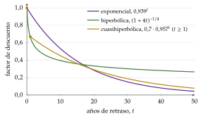
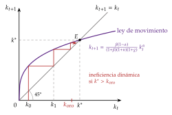
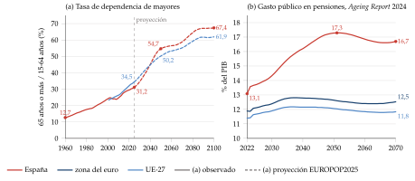
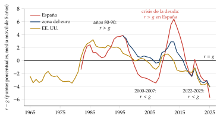
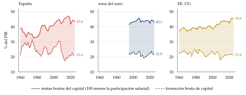
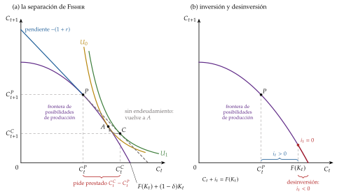
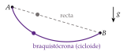

Tema 3.A.29
Modelización dinámica de las tomas de decisiones. Modelos de horizonte infinito y modelos de generaciones solapadas.
Ecuación de Euler y de Bellman, control óptimo, agente representativo, horizonte infinito (Ramsey-Cass-Koopmans) y generaciones solapadas de Diamond.
Exclusivo Material exclusivo de victorgutierrezmarcos.es y la app Oposición TCEE · DCE. Puedes usarlo libremente para tu estudio personal. No se autoriza su incorporación a otras plataformas, aplicaciones o servicios. Condiciones de uso.
Introducción
Enganche:
«No dejes para mañana lo que puedas hacer hoy», dice el refrán. La economía responde con un «depende»: si lo que se aparta hoy rinde mañana más de lo que nos cuesta esperar, conviene dejar para mañana parte del consumo de hoy. Y, aunque lo planeemos, no siempre lo cumplimos: el lunes en que íbamos a empezar a ahorrar se convierte en el lunes siguiente.
En 1928, un matemático de Cambridge de 25 años, Frank Ramsey, abrió su artículo sobre el ahorro con una pregunta: ¿cuánto de su renta debe ahorrar una nación? (Ramsey, 1928, 543). Responderla obliga a mirar a la vez el presente y el futuro, a las generaciones de hoy y a las que vendrán.
Detrás está la pregunta de esta exposición: ¿cómo se modelizan las decisiones cuando lo que hacemos hoy cambia lo que podremos hacer mañana? ¿Y cambia la respuesta a Ramsey según cómo modelicemos el tiempo?
Relevancia:
Casi todas las decisiones económicas importantes son dinámicas: ahorrar, invertir, educarse, endeudarse, extraer un recurso que se agota o cotizar para la pensión. En todas, lo que se hace hoy cambia lo que se podrá hacer mañana.
Es el lenguaje de la macroeconomía actual: desde la crítica de Lucas, los modelos con los que trabajan los bancos centrales y los ministerios de economía son modelos de agentes que optimizan en el tiempo, casi siempre con un horizonte infinito.
Para la política económica, muchas decisiones son, en el fondo, un reparto entre generaciones. Desde 2023, toda cotización por jubilación en España incluye el mecanismo de equidad intergeneracional: una cotización finalista de 0,90 puntos porcentuales en 2026, que llegará a 1,2 puntos en 2029 y se mantendrá hasta 2050, que no da derecho a prestaciones y nutre el Fondo de Reserva de la Seguridad Social «con el fin de preservar el equilibrio entre generaciones» (Ministerio de Empleo y Seguridad Social, 2015). Los que hoy trabajan apartan recursos para las pensiones de los que se jubilarán mañana: una decisión dinámica de manual.
Contextualización. Desde un punto de vista conceptual:
¿Qué es estático y qué es dinámico en economía? Según Hicks, basta con definir uno de los 2 términos para que quede definido el otro; en la primera mitad del siglo XX lo intentaron Schumpeter, Frisch, Hicks y Samuelson, con definiciones a veces incompatibles.
El análisis estático estudia las relaciones entre variables referidas a un mismo momento o periodo. El análisis dinámico estudia relaciones entre variables referidas a momentos distintos: el pasado o el futuro esperado condicionan el presente. La clave formal está en los subíndices temporales.
Entre ambos está la estática comparativa, que compara 2 equilibrios cuando cambia un dato, sin decir cómo se pasa de uno a otro. Samuelson (1947) mostró que sus resultados solo tienen sentido si el equilibrio es estable, y la estabilidad es una propiedad dinámica: es el principio de correspondencia1. Por eso el análisis dinámico no es estática comparativa, ni tampoco el estudio de cómo se llega a un equilibrio desde un desequilibrio.
Como señalaba Tinbergen, la distinción entre estática y dinámica no separa 2 tipos de fenómenos, sino 2 formas de estudiarlos: un mismo fenómeno puede analizarse con herramientas estáticas, más sencillas, o dinámicas, cuando aportan algo. El análisis dinámico aporta cuando, para explicar una decisión de hoy, importan otros momentos del tiempo: cuando la decisión es genuinamente intertemporal2.
Desde un punto de vista histórico:
Los clásicos mezclaban relaciones estáticas y dinámicas a conveniencia; como señala Baumol, la economía era entonces economía política, más atenta a los argumentos de política que al rigor analítico. La revolución marginalista separó ambas y se quedó con la estática, con excepciones como el tanteo de Walras o la recontratación de Edgeworth.
A principios del siglo XX, el análisis del capital y del interés obliga a mirar el tiempo. Fisher (1930) explica el tipo de interés por la impaciencia de los consumidores y las oportunidades de inversión, y Ramsey (1928) resuelve el primer problema de ahorro óptimo de un agente de vida infinita3. Entre los primeros modelos dinámicos de la macroeconomía están los del ciclo, como el de impulso y propagación de Frisch (1933) [ver tema 3.A.42].
A mediados de siglo se microfundamentan los agregados: el consumo (Friedman, Modigliani) [ver tema 3.A.33], la inversión (Jorgenson; Eisner y Strotz) [ver tema 3.A.34], la demanda de dinero (Baumol, Tobin) [ver tema 3.A.35] y la oferta de trabajo (Lucas y Rapping) [ver tema 3.A.25]. Llegan también las herramientas, la programación dinámica de Bellman (1957) y el principio del máximo de Pontryagin et al. (1962), y los 2 grandes marcos: el agente de vida infinita (Cass, 1965; Koopmans, 1965) y las generaciones solapadas (Samuelson, 1958; Diamond, 1965).
Desde la crítica de Jr. Lucas Robert E. (1976) [ver tema 3.A.6], la optimización dinámica ocupa casi toda la macroeconomía: primero con agentes representativos y, en los últimos años, con agentes heterogéneos.
Problemática (preguntas clave):
¿Cómo deciden los agentes cuando lo que hacen hoy cambia lo que podrán hacer mañana? ¿Con qué herramientas se modeliza esa decisión, y cuándo conviene cada una?
¿Cómo se lleva a la macroeconomía? ¿Qué se gana suponiendo un agente que vive para siempre, y qué cambia cuando las generaciones se suceden?
Y, detrás de todo, la pregunta de Ramsey: ¿ahorra el mercado lo que conviene?
Estructura: la exposición sigue el orden del título y va de lo individual a lo agregado. Cada bloque responde a una pregunta que deja abierta el anterior.
I. La modelización dinámica de las decisiones (I): construimos la herramienta, la optimización dinámica, con las decisiones de un hogar y de una empresa, y vemos los 3 métodos con que se resuelve. Los 3 llevan a la misma condición, la ecuación de Euler.
II. El agente representativo de vida infinita (II): llevamos la herramienta a la macroeconomía con un agente representativo que vive para siempre, en los modelos de horizonte infinito. Su ejemplo es el modelo de Ramsey, Cass y Koopmans, cuyo equilibrio es eficiente: el mercado nunca ahorra de más.
III. Generaciones solapadas y heterogeneidad (III): con agentes que viven un tiempo finito y se suceden, en los modelos de generaciones solapadas, el equilibrio puede acumular demasiado capital. Cerramos con los límites del agente representativo.
Usaremos como sinónimos análisis dinámico e intertemporal, siempre que el tiempo importe de verdad. Queda fuera la interdependencia estratégica: cuando lo que decide un agente depende de lo que decidirán otros en el futuro, la herramienta es la teoría de juegos dinámicos [ver tema 3.A.14].
3.A.29. Modelización dinámica de las tomas de decisiones
Introducción
I. La modelización dinámica de las decisiones: enfoque microeconómico
1. Consumidores: componentes (\(U_0=\sum\beta^tu(C_t)\), \(b_{t+1}=(1+r)b_t+Y_t-C_t\)); Lagrange, control óptimo y programación dinámica: \(u'(C_t)=\beta(1+r)u'(C_{t+1})\); Fisher
2. Empresas: separación de Fisher, costes de ajuste (q de Tobin) y recursos agotables (Hotelling)
II. El agente representativo de vida infinita
1. El agente representativo . Horizonte infinito: transversalidad, consistencia temporal y el modelo de Ramsey-Cass-Koopmans
III. Generaciones solapadas y heterogeneidad
1. Samuelson (1958) y Diamond (1965): \(k_{t+1}=\frac{\beta(1-\alpha)}{(1+\beta)(1+n)(1+g)}k_t^{\alpha}\); ineficiencia dinámica, deuda, pensiones y burbujas
2. Limitaciones del agente representativo y nuevos enfoques
Conclusión
Reparto del cante: introducción, 2′30″; I, 8′30″ (I.1, 6′; I.2, 2′30″); II, 8′ (II.1, 2′; II.2, 6′); III, 10′ (III.1, 8′; III.2, 2′), y conclusión, 1′. La introducción y la conclusión se cantan sin pizarra. La pizarra se organiza en 3 columnas. A la izquierda, lo que se queda hasta el final, recuadrado: el problema del consumidor en una línea, la ecuación de Euler (I.1.2), la de Bellman y, en el bloque III, la ley de movimiento de Diamond. En el centro, la tabla de los 3 métodos (I.1.2), que se borra al acabar el bloque I, y después las 3 ecuaciones del modelo de Ramsey, Cass y Koopmans (II.2). A la derecha, en el bloque III, el gráfico de Diamond en \((k_t,k_{t+1})\) con la bisectriz y el cuadro de horizonte infinito frente a generaciones solapadas (III.1). Los refranes se apuntan en una esquina al decirlos: el del enganche y las pegatinas «cada cosa a su tiempo» (Bellman), «de tal palo, tal astilla» (la dinastía), «cuando seas padre, comerás huevos» (generaciones solapadas) y «la avaricia rompe el saco» (ineficiencia dinámica). Lo que va en cajas grises, en notas y en los anexos es para las preguntas del tribunal.
Para saber más
TIME. Blindspots in Economic Thinking, conferencia de Gonçalo Fonseca sobre el tiempo como punto ciego del pensamiento económico (vídeo): https://youtu.
be/ (Young Scholars Initiative, 2021).W6DVUehdczM «Intertemporal choice», Wikipedia: https://en.
wikipedia. (Wikipedia, 2026).org/ wiki/ Intertemporal_ choice
I. La modelización dinámica de las decisiones: enfoque microeconómico
En el cante (8′30″): los consumidores (6′), con los componentes en 1′30″ (estado y control, \(U_0\) con el descuento exponencial, la CRRA y la restricción de cada periodo, de palabra la mayor parte), los 3 métodos en 3′ (el problema escrito una vez; Lagrange lleva a la ecuación de Euler, que se recuadra y se queda; el hamiltoniano, a su versión continua; la ecuación de Bellman, recuadrada, con el ejemplo logarítmico en una línea; la tabla 1 se rellena columna a columna) y las aplicaciones en 1′30″ (Fisher con la ESI; el capital humano y la incertidumbre en una frase). Las empresas (2′30″): el capital como estado; la separación de Fisher y la regla de Hotelling, de palabra; la q con sus 2 condiciones escritas bajo la ecuación de Euler («la misma lógica de arbitraje»). Las propiedades de la utilidad, la estática comparativa y los modelos de las empresas paso a paso son de profundización.
Conclusión anticipada: un problema es genuinamente dinámico cuando una variable de estado une los periodos. Se resuelva con el método que se resuelva, su solución se resume en una condición de arbitraje intertemporal, la ecuación de Euler, y en un precio sombra del estado.
Nexo: empezamos por los agentes individuales, primero el consumidor, en el que se ven todas las piezas de un problema dinámico, y después la empresa.
I.1. Decisiones intertemporales de los consumidores
La conclusión anticipada del subapartado: con preferencias aditivas y descuento exponencial, lo que hace intertemporal el problema del consumidor es la restricción, y su solución es la ecuación de Euler, que reaparecerá en todo el tema.
I.1.1. Componentes del problema dinámico
En un problema dinámico las variables son de 2 tipos:
variables flujo, referidas a un intervalo de tiempo y elegidas directamente: en optimización dinámica, las variables de control (el consumo, \(C_t\); la inversión, \(I_t\));
variables stock, referidas a un instante y determinadas por las decisiones de flujo pasadas: las variables de estado (los activos, \(b_t\); el capital, \(K_t\); las reservas de un recurso).
El tiempo puede ser discreto (\(t=0,1,2,\dots\)) o continuo, y el horizonte, finito o infinito. El consumidor elige una senda de consumo, \((C_0,C_1,\dots,C_T)\), y el problema tiene 4 piezas: unas preferencias sobre sendas, unas restricciones (la ecuación de estado y las condiciones inicial y final), un método de resolución y, como resultado, la senda óptima.
a) Las preferencias intertemporales
La forma general: las preferencias sobre sendas se representan con una función de utilidad intertemporal valorada desde el periodo inicial, \(U_0=U(C_0,C_1,C_2,\dots)\).4
Ramsey (1928) la separa en una función de descuento, \(D(t)\), y una utilidad instantánea: \(U_0=\sum_tD(t)\,u(C_t)\).
Samuelson (1937) propone el descuento exponencial, el modelo estándar que usaremos en toda la exposición (Samuelson, 1937): \[U_0\equiv\sum_{t=0}^{T}\beta^t\,u(C_t),\qquad\beta\equiv\frac{1}{1+\rho},\quad\rho>0,\tag{1}\] con 2 componentes:
el factor de descuento \(\beta\), con \(0<\beta<1\), y la tasa de preferencia temporal \(\rho\): la mayoría de los agentes prefiere una recompensa hoy a la misma mañana, por impaciencia o por el riesgo de no llegar a disfrutarla5;
la utilidad instantánea \(u(C_t)\), creciente y estrictamente cóncava (\(u'>0\), \(u''<0\)), definida sobre el consumo de bienes no duraderos6.
La elasticidad de sustitución intertemporal (ESI) mide cuánto cambia la proporción del consumo entre 2 periodos cuando cambia su precio relativo, que es el tipo de interés: \[\mathrm{ESI}\equiv\frac{d\ln(C_{t+1}/C_t)}{d\ln\lvert\mathrm{RMS}_{t,t+1}\rvert}.\] Cuanto mayor es, más fácil es sustituir consumo entre periodos: hace falta un cambio menor de la relación marginal de sustitución para acomodar un cambio dado en la proporción consumida en cada periodo.
La forma habitual de \(u\) es la CRRA o isoelástica [ver tema 3.A.8]: \[u(C)=\frac{C^{1-\theta}-1}{1-\theta}\quad(\theta>0,\ \theta\neq1),\qquad u(C)=\ln C\quad(\theta=1),\tag{2}\] con \(\mathrm{ESI}=1/\theta\), constante para todo nivel de consumo7: la reacción del consumo al tipo de interés queda resumida en un único parámetro, que no cambia con el nivel de consumo. El parámetro \(\theta\) es también el coeficiente de aversión relativa al riesgo, \(r_R=-u''(C)\,C/u'(C)=\theta\) [ver tema 3.A.10]: con utilidad aditiva, la aversión a la variabilidad del consumo entre estados de la naturaleza y entre periodos es la misma8.
Propiedades de (1) (Mas-Colell, Whinston y Green, 1995, § 20.B):
impaciencia: con \(\beta<1\), retrasar un periodo una senda no nula la empeora; una senda acotada tiene utilidad finita aunque el horizonte sea infinito, lo que permite comparar cualquier par de sendas y aplicar el cálculo;
estacionariedad: si 2 sendas coinciden hasta \(T\), la preferencia entre ellas no cambia si se adelantan \(T\) periodos: las preferencias sobre el futuro no dependen de la edad;
separabilidad aditiva9: la ordenación de lo que se consume a partir de \(T+1\) no depende de lo consumido hasta \(T\), y al revés; no hay hábitos [ver tema 3.A.33];
duración del periodo: la separabilidad es más creíble cuanto más largo es el periodo (incluso los bienes perecederos dan servicios durante un tiempo), y \(\beta\) está más cerca de 1 cuanto más corto es;
recursividad: la utilidad de hoy es la del consumo de hoy más la de la senda futura valorada desde mañana, \(U_0=u(C_0)+\beta\,U_1\); es la propiedad en la que se apoya la programación dinámica (I.1.2);
altruismo: con horizonte infinito, el agente puede leerse como una dinastía que valora el bienestar de sus descendientes como el propio (II.2).
Impaciencia y estacionariedad son las que llevan al descuento exponencial, el único que hace las preferencias consistentes en el tiempo (II.2).
Lo que hace intertemporal el problema: con estas preferencias, la utilidad de un periodo no depende de lo consumido en otro. El carácter intertemporal tiene que venir de la restricción: las decisiones de un periodo deben cambiar lo que se puede hacer en otro.
b) Las restricciones
La ecuación de estado. En cada periodo, lo que se consume más lo que se guarda para el siguiente es igual a lo que se gana más los activos con sus intereses: \[C_t+b_{t+1}=Y_t+(1+r)\,b_t\quad\Longleftrightarrow\quad b_{t+1}-b_t=Y_t+r\,b_t-C_t,\tag{3}\] con \(Y_t\) la renta no financiera (del trabajo o de una dotación) y \(r\,b_t\) la financiera.
Los activos \(b_t\) son la variable que une un periodo con el siguiente: el ahorro es el vehículo que traslada consumo en el tiempo10.
Hay una restricción por periodo, todas con la misma forma. Si \(b_t\) no tiene límite inferior (salvo al final), el consumidor presta y pide prestado al mismo tipo: no hay restricciones de liquidez.
Las condiciones inicial y terminal: \(b_0\) está dado y, al final, \(b_{T+1}\geq0\): no se puede morir endeudado, y en el óptimo tampoco interesa morir con activos, así que \(b_{T+1}=0\). Con horizonte infinito, la condición terminal pasa a ser la de no-Ponzi (II.2).
La restricción intertemporal: sustituyendo hacia delante, todas las restricciones de cada periodo se resumen en una, \[\sum_{t=0}^{T}\frac{C_t}{(1+r)^t}=(1+r)\,b_0+\sum_{t=0}^{T}\frac{Y_t}{(1+r)^t}:\] el valor actual del consumo es igual a la riqueza.11
I.1.2. Métodos de resolución: sustitución, control óptimo y programación dinámica
Hemos planteado el problema; ahora, cómo se resuelve. La conclusión anticipada: hay 3 métodos y los 3 llevan a la misma ecuación de Euler. Se elige uno u otro por comodidad, según el tiempo sea discreto o continuo, el horizonte finito o infinito y haya o no incertidumbre.
Los 3 parten del mismo esquema: un objetivo aditivo y descontado, una variable de control (el consumo, \(C_t\)), una de estado (los activos, \(b_t\)), una ecuación de estado que las une y unas condiciones inicial y final.
a) Sustitución y multiplicadores de Lagrange (tiempo discreto)
Con horizonte finito y sin incertidumbre, el problema del consumidor es \[\begin{array}{rl}\displaystyle \max_{\{C_t\}_{t=0}^{T}} & \displaystyle \sum_{t=0}^{T}\beta^t\,u(C_t) \\ \text{s.a.} & b_{t+1}=(1+r)\,b_t+Y_t-C_t,\quad t=0,\dots,T \\ & b_0\ \text{dado} \\ & b_{T+1}\geq 0\end{array}\] un problema estático con muchas variables. Se resuelve sustituyendo el consumo de cada restricción en el objetivo o con un multiplicador \(\lambda\) sobre la restricción intertemporal (anexo A). La condición de primer orden para \(C_t\), \(\beta^tu'(C_t)=\lambda/(1+r)^t\), dividida entre la de \(C_{t+1}\), es la ecuación de Euler12:
\[u'(C_t)=\beta\,(1+r)\,u'(C_{t+1})\tag{4}\]
En el óptimo, la utilidad que se pierde al consumir un euro menos hoy es igual a la que dan mañana ese euro y sus intereses, descontada. Si no fuera así, trasladar consumo entre periodos aumentaría la utilidad.
El multiplicador \(\lambda\) es la utilidad marginal de la riqueza: en \(t=0\), \(\lambda=u'(C_0)\).
Ventaja: es el método del cálculo elemental. Límite: con horizonte largo o infinito hay muchas condiciones, y con incertidumbre la restricción intertemporal única desaparece.
b) El control óptimo (tiempo continuo)
Es la versión moderna del cálculo de variaciones, el método con el que Ramsey resolvió su problema. Su resultado central es el principio del máximo, que anunciaron Boltianski, Gamkrelidze y Pontriaguin en 1956 y publicaron completo Pontryagin et al. (1962) (anexo B).
El consumidor en tiempo continuo y con horizonte infinito resuelve \[\begin{array}{rl}\displaystyle \max_{\{C_t\}} & \displaystyle \int_0^{\infty}e^{-\rho t}\,u(C_t)\,dt \\ \text{s.a.} & \dot b_t=Y_t+r\,b_t-C_t \\ & b_0\ \text{dado} \\ & \lim_{t\to\infty}e^{-rt}\,b_t\geq0\end{array}\] con el hamiltoniano en valor corriente, \(\mathcal{H}_t=u(C_t)+\lambda_t\,(Y_t+r\,b_t-C_t)\), donde el coestado \(\lambda_t\) es el valor, en utilidad de \(t\), de un euro más de activos. Las condiciones son:
control: \(\partial\mathcal{H}_t/\partial C_t=0\), es decir, \(u'(C_t)=\lambda_t\);
coestado: \(\dot\lambda_t=\rho\,\lambda_t-\partial\mathcal{H}_t/\partial b_t=(\rho-r)\,\lambda_t\);
transversalidad: \(\lim_{t\to\infty}e^{-\rho t}\lambda_t\,b_t=0\).
Con la CRRA, \(u'(C)=C^{-\theta}\), las 2 primeras dan la ecuación de Euler en tiempo continuo, \[\frac{\dot C_t}{C_t}=\frac{r-\rho}{\theta},\tag{5}\] la misma que en discreto, \(\ln(C_{t+1}/C_t)\simeq(r-\rho)/\theta\) (I.1.3)13.
Ventaja: el coestado tiene una lectura económica directa, el precio sombra del estado (la \(q\) de Tobin en la empresa, la regalía en un recurso agotable), y las condiciones son ecuaciones diferenciales que se analizan con diagramas de fases. Es el método del crecimiento óptimo [ver tema 3.A.43], la inversión [ver tema 3.A.34] y los costes de ajuste del empleo [ver tema 3.A.26].
c) La programación dinámica (Bellman)
Bellman (1957) parte de una idea sencilla, el principio de optimalidad: sean cuales sean el estado y la decisión iniciales, el resto de un plan óptimo tiene que ser óptimo desde el estado al que lleva la primera decisión14. En vez de elegir toda la senda de una vez, se resuelve un problema de 2 periodos: hoy y «el resto de la vida». Es el refrán «cada cosa a su tiempo»: hoy se decide solo lo de hoy, sabiendo que mañana se decidirá bien.
La herramienta es la función de valor, \(V(b_t)\): la utilidad máxima que se puede obtener desde \(t\) con unos activos \(b_t\); es una función indirecta de utilidad, como la \(V(\vec{p},\overline W)\) del consumidor estático [ver tema 3.A.9]. Por la recursividad de las preferencias, cumple la ecuación de Bellman:
\[V(b_t)=\max_{C_t}\left\{u(C_t)+\beta\,V(b_{t+1})\right\},\qquad b_{t+1}=(1+r)\,b_t+Y_t-C_t\tag{6}\]
Todo el futuro queda resumido en un número, \(V(b_{t+1})\).
De ella sale la ecuación de Euler en 2 pasos (anexo C):
condición de primer orden, \(u'(C_t)=\beta\,V'(b_{t+1})\): un euro consumido hoy vale lo mismo que un euro más de activos mañana;
condición de la envolvente, \(V'(b_t)=(1+r)\,u'(C_t)\): un euro más de activos hoy vale lo que se puede consumir con él y sus intereses.
Juntas, \(u'(C_t)=\beta(1+r)\,u'(C_{t+1})\), que es (4). La derivada de la función de valor, \(V'(b_t)\), hace el papel del multiplicador de Lagrange y del coestado: es el mismo precio sombra visto desde otro método.
Un ejemplo resuelto. Un consumidor sin renta laboral (\(Y_t=0\)), con \(u(C)=\ln C\) y horizonte infinito, vive de sus activos: \(b_{t+1}=(1+r)\,b_t-C_t\). Se prueba una función de valor de la forma \(V(b)=A+B\ln b\):
condición de primer orden: \(1/C_t=\beta B/[(1+r)\,b_t-C_t]\), de donde \(C_t=(1+r)\,b_t/(1+\beta B)\);
sustituyendo en la ecuación de Bellman e igualando los coeficientes de \(\ln b_t\) a los 2 lados, \(B=1+\beta B\), es decir, \(B=1/(1-\beta)\);
luego \[C_t=(1-\beta)(1+r)\,b_t,\qquad b_{t+1}=\beta(1+r)\,b_t:\] cada periodo se consume una fracción fija, \(1-\beta\), de la riqueza, y la riqueza y el consumo crecen a la tasa \(\beta(1+r)\), que es lo que dice la ecuación de Euler con utilidad logarítmica. Con \(r=\rho\), \(\beta(1+r)=1\) y el consumo es constante. La fracción no depende de \(r\): con utilidad logarítmica, los efectos renta y sustitución de un cambio del tipo de interés se compensan exactamente.
Ventajas: trata con naturalidad la incertidumbre (basta con poner una esperanza delante de \(V(b_{t+1})\), como se ve enseguida), se resuelve numéricamente iterando la ecuación, que converge porque \(\beta<1\) (Stokey, Lucas y Prescott, 1989; Ljungqvist y Sargent, 2018), y da directamente la regla de decisión, \(C_t=C(b_t)\), que es lo que se simula en los modelos de ciclo real y en los de equilibrio general dinámico y estocástico (EGDE) [ver tema 3.A.42]. Es también el método de la búsqueda de empleo [ver tema 3.A.26] y de los salarios de eficiencia de Shapiro y Stiglitz [ver tema 3.A.27].
d) La incertidumbre: la ecuación de Euler estocástica
Si la renta futura es aleatoria, la ecuación de Bellman lleva una esperanza condicionada a lo que se sabe en \(t\), \[V(b_t,Y_t)=\max_{C_t}\left\{u(C_t)+\beta\,\mathbb{E}_t\!\left[V(b_{t+1},Y_{t+1})\right]\right\},\] y la ecuación de Euler se cumple en esperanza: \[u'(C_t)=\beta\,(1+r)\,\mathbb{E}_t\!\left[u'(C_{t+1})\right].\tag{7}\]
Las restricciones ya no se resumen en una sola: hay una por periodo y por estado de la naturaleza. Las expectativas son racionales: los agentes usan el modelo y toda la información disponible [ver tema 3.A.6]. Es la razón principal para usar la programación dinámica (anexo C).
e) Comparación de los 3 métodos
Los 3 métodos son equivalentes cuando se pueden aplicar los 3: cambian la presentación y la comodidad, no el resultado (tabla 1).
Tabla 1.– Los 3 métodos de la optimización dinámica Sustitución y Lagrange Control óptimo Programación dinámica Tiempo y horizonte discreto, finito continuo (o discreto), finito o infinito discreto (o continuo), finito o infinito Qué se busca la senda entera la senda del control la regla de decisión \(C(b)\) Herramienta lagrangiana, multiplicador \(\lambda\) hamiltoniano \(\mathcal{H}\), coestado \(\lambda_t\) función de valor \(V(b)\) Precio sombra \(\lambda\), utilidad marginal de la riqueza \(\lambda_t\), valor de un euro más de activos \(V'(b_t)\), valor marginal de los activos Condición clave Ventaja sencillez lectura económica, diagramas de fases incertidumbre, cálculo numérico Dónde se usa Fisher, ciclo vital, Diamond q de Tobin, Ramsey-Cass-Koopmans, costes de ajuste del empleo Hall, ciclo real, búsqueda de empleo Referencia Fisher (1930) Pontryagin et al. (1962) Bellman (1957) Fuente: elaboración propia a partir de Acemoglu (2009, caps. 6 y 7) y Cerdá Tena (2001).
I.1.3. Aplicaciones: la decisión de consumo y ahorro
a) La piedra angular: la decisión de consumo y ahorro de Fisher
Fisher (1930) mostró que en el centro de todo problema intertemporal hay 3 piezas: una hipótesis de comportamiento (un agente racional que mira al futuro, con previsión perfecta), unas preferencias y una restricción [ver tema 3.A.33]. Con 2 periodos, sin activos iniciales y la riqueza \(\overline W\equiv Y_1+Y_2/(1+r)\), el consumidor elige \(C_1\) y \(C_2\) con \(C_1+C_2/(1+r)=\overline W\), y la ecuación de Euler (4) es \(u'(C_1)=\beta(1+r)\,u'(C_2)\).
Con la CRRA (2), da el perfil del consumo: \[\frac{C_{t+1}}{C_t}=\left[\beta(1+r)\right]^{1/\theta}\qquad\Longrightarrow\qquad\ln\frac{C_{t+1}}{C_t}\simeq\frac{r-\rho}{\theta}.\]
el consumo crece si \(r>\rho\), es constante si \(r=\rho\) y decrece si \(r<\rho\). El signo del crecimiento no dice si el consumidor presta o pide prestado, que depende también de la senda de su renta15;
cuanto mayor es la ESI, \(1/\theta\), más responde el crecimiento del consumo a la diferencia entre \(r\) y \(\rho\). La evidencia apunta a una ESI baja: el crecimiento del consumo apenas responde al tipo de interés real (Hall, 1988; Campbell y Mankiw, 1989).
El alisamiento del consumo: con mercados de capitales perfectos, la tasa de crecimiento del consumo solo depende de \(r\), \(\rho\) y \(\theta\), no de la senda de la renta, y su nivel depende de la riqueza total, no de la renta del periodo. El consumidor alisa su consumo cualesquiera que sean \(r\) y \(\rho\): con \(r=\rho\) lo mantiene constante y, si no, lo hace crecer o decrecer a una tasa constante16. De aquí parten la renta permanente de Friedman (1957) y el ciclo vital de Modigliani y Brumberg (1954) [ver tema 3.A.33].
Un cambio del tipo de interés tiene 3 efectos sobre el consumo de hoy: sustitución (lo reduce: el consumo de hoy se encarece), renta (si el consumidor presta, lo aumenta: es más rico) y riqueza (lo reduce: la renta futura vale menos hoy) (Obstfeld y Rogoff, 1996). El efecto total es ambiguo en quien presta y negativo en quien pide prestado. La ecuación de Slutsky con dotación está en el anexo A, la estática comparativa completa en el anexo F y el gráfico en [ver tema 3.A.33].
Implicaciones de política: si la ESI es baja, gravar menos los intereses apenas aumenta el ahorro, y bajar los tipos apenas adelanta el consumo por esta vía [ver tema 3.A.37]. La misma ecuación explica la cota cero de los tipos nominales (anexo G).
b) La inversión en capital humano
Becker (1962) trata la educación como una inversión: hoy cuesta (la matrícula y, sobre todo, el salario al que se renuncia) y mañana rinde un salario más alto [ver tema 3.A.25].
Con mercado de capitales perfecto y sin que el tiempo de estudio dé utilidad, la decisión de formarse se separa de la de consumir: primero se elige la formación que maximiza el valor actual de las rentas y después se reparte esa riqueza entre periodos. Es el teorema de separación de Fisher (1930) y Hirshleifer (1958), que Acemoglu y Autor (2011) aplican al capital humano y que vuelve a aparecer en la empresa (I.2.2).
c) La incertidumbre: el paseo aleatorio y la valoración de activos
Con utilidad cuadrática y \(\beta(1+r)=1\), la ecuación de Euler estocástica (7) dice que el consumo sigue un paseo aleatorio: solo cambia con la información nueva (Hall, 1978). Con varios activos, la misma condición para cada uno da el modelo de valoración de activos basado en el consumo (C-CAPM) (R. E. Lucas Jr., 1978; Breeden, 1979). Los 2 se desarrollan en [ver tema 3.A.33].
I.2. Decisiones intertemporales de las empresas
Una vez visto el consumidor, pasamos a la empresa. La conclusión anticipada: su problema solo es intertemporal si algo une los periodos (el capital que se acumula, los costes de ajustarlo o un recurso que se agota), y en los 3 casos aparece un precio sombra que cumple una condición de arbitraje, la ecuación de Euler de un activo.
I.2.1. Componentes: producción intertemporal y acumulación de capital
La empresa competitiva maximiza el valor actual de sus beneficios, \[\sum_{t=0}^{T}\frac{B_t}{(1+r)^t}\qquad\text{o}\qquad\int_0^{T}e^{-rt}B_t\,dt,\] que es lo que quieren sus propietarios cuando hay mercado de capitales perfecto (la separación de Fisher, en I.2.2)17.
Si el beneficio de cada periodo, \(B_t=p_tF(\vec{z}_t)-\vec{w}_t\cdot\vec{z}_t\), solo depende de lo que se hace en \(t\), el problema no es intertemporal: basta con maximizar periodo a periodo, de forma «miope»18.
Lo vuelve intertemporal una ecuación de estado. La más habitual es la acumulación del capital, con la inversión como control y el capital como estado: \[K_{t+1}=(1-\delta)\,K_t+I_t.\] La empresa ya no alquila el capital, sino que lo compra, se le deprecia y renuncia al interés que obtendría con ese dinero. Aun así, sin más fricciones, el resultado se parece al estático: el valor del producto marginal del capital se iguala a su coste de uso, \(P\,F_K=P^K(r+\delta)\) con un precio del capital constante (la regla de Jorgenson), y la decisión es una sucesión de problemas estáticos [ver tema 3.A.34]. Para que sea genuinamente intertemporal hacen falta costes de ajuste o recursos que se agotan.
I.2.2. Aplicaciones: separación de Fisher, costes de ajuste y recursos agotables
a) La separación de Fisher: el modelo de Robinson Crusoe
Idea: un único agente, a la vez productor y consumidor, que puede consumir o invertir un solo bien. ¿Decide su inversión según sus gustos?
Resultado: depende de que haya mercado de capitales.
Sin mercado, solo puede llevar recursos al futuro invirtiendo: iguala la relación marginal de transformación intertemporal, \(1+F'(K_{t+1})-\delta\), a su relación marginal de sustitución, \(u'(C_t)/[\beta u'(C_{t+1})]\), y cuánto invierte depende de lo impaciente que sea.
Con mercado al tipo \(r\), salen 2 condiciones independientes: la ecuación de Euler (4) para el consumo y \(F'(K_{t+1})-\delta=r\) para la inversión. Primero se invierte hasta que el rendimiento neto del capital iguala al tipo de interés, sin mirar las preferencias, y después se reparte la riqueza entre periodos prestando o pidiendo prestado. Es el teorema de separación de Fisher (1930), formalizado por Hirshleifer (1958): la empresa maximiza su valor y todos sus propietarios están de acuerdo, sean pacientes o impacientes; es la base de la regla del valor actual neto19.
Extensiones: con restricciones de liquidez (se puede prestar, pero no pedir prestado) o con tipos distintos para prestar y para endeudarse, la separación falla para los que querrían endeudarse: invierten menos de lo que maximizaría su riqueza. La misma geometría explica las ganancias del comercio internacional (Haberler) [ver tema 3.B.5] y el enfoque intertemporal de la balanza de pagos [ver tema 3.B.12]. El modelo, con su gráfico y la desinversión, está en el anexo D.
b) Los costes de ajuste: la q de Tobin
Idea: si instalar capital cuesta más cuanto más deprisa se hace (costes de ajuste internos y convexos), la empresa no salta al capital deseado: reparte la inversión en el tiempo, y su decisión de hoy depende de lo que espera mañana (Tobin, 1969).
Modelo (Romer, 2019, cap. 9): cada una de las \(N\) empresas tiene un capital \(\kappa_t\) y gana \(B(K_t)\) por unidad, decreciente en el capital de la industria, \(K_t\); el capital nuevo cuesta 1 y su instalación, \(\Phi(I_t)\), con \(\Phi(0)=\Phi'(0)=0\) y \(\Phi''>0\), y no hay depreciación: \[\begin{array}{rl}\displaystyle \max_{\{I_t\}} & \displaystyle \int_0^{\infty}e^{-rt}\left[B(K_t)\,\kappa_t-I_t-\Phi(I_t)\right]dt \\ \text{s.a.} & \dot\kappa_t=I_t \\ & \kappa_0\ \text{dado}\end{array}\] Con el hamiltoniano en valor corriente, cuyo coestado es la propia \(q_t\), \(\mathcal{H}_t=B(K_t)\,\kappa_t-I_t-\Phi(I_t)+q_tI_t\), las condiciones son \[q_t=1+\Phi'(I_t),\qquad r\,q_t=B(K_t)+\dot q_t,\qquad\lim_{t\to\infty}e^{-rt}q_t\,\kappa_t=0.\tag{8}\]
Lectura: \(q_t\) es el precio sombra del capital instalado, el valor actual de los beneficios que dará una unidad más, \(q_t=\int_t^{\infty}e^{-r(s-t)}B(K_s)\,ds\).
La primera condición dice que se invierte hasta que el coste de comprar e instalar la última unidad, con el coste marginal de ajuste, \(\Phi'(I_t)\), iguala a ese valor: se invierte si \(q_t>1\).
La segunda, que resulta de derivar el hamiltoniano respecto al estado, el capital, es una condición de arbitraje: tener una unidad de capital rinde su beneficio más su revalorización, y eso tiene que igualar al interés. Es la ecuación de Euler de un activo20.
El diagrama de fases, las políticas y la q media frente a la marginal (Hayashi, 1982) se estudian en [ver tema 3.A.34]; los costes de ajuste del empleo, con el salario real y la misma lógica, en [ver tema 3.A.26].
c) Los recursos agotables: la regla de Hotelling
Idea: en los recursos que se agotan (los minerales, los combustibles fósiles), lo que se extrae hoy no se podrá extraer mañana. Su gestión es genuinamente intertemporal, y el recurso bajo tierra se trata como un activo.
Resultado (Hotelling, 1931): el propietario competitivo de un yacimiento solo lo deja bajo tierra si su precio neto del coste marginal de extracción, la regalía, se revaloriza tanto como rendiría venderlo hoy y prestar el dinero. En equilibrio, la regalía crece a la tasa del tipo de interés: es la regla de Hotelling, otra ecuación de Euler de un activo, cuyo precio sombra es la regalía.
Implicaciones: el precio supera al coste marginal y, sin embargo, no hay beneficio extraordinario: la regalía paga el coste de oportunidad del recurso, una renta de escasez, que el análisis estático confundiría con un beneficio. Y si se esperan impuestos crecientes sobre el carbono, adelantar la extracción es racional: la paradoja verde [ver tema 3.B.31]. El desarrollo, en el anexo E.
Recapitulación: un hogar o una empresa resuelven un problema dinámico cuando una variable de estado une los periodos; con Lagrange, con el control óptimo o con la programación dinámica, la solución es una condición de arbitraje (la ecuación de Euler del consumo, la de la q, la de Hotelling) con un precio sombra del estado. En la pregunta de Ramsey, el hogar ahorra hasta que el rendimiento del ahorro, \(r\), compensa su impaciencia, \(\rho\), y la empresa invierte hasta que el capital rinde \(r\).
Puente: falta saber qué pasa cuando estas decisiones se agregan y el tipo de interés deja de ser un dato. Para eso, la macroeconomía necesita un agente representativo.
II. El agente representativo de vida infinita
En el cante (8′): el agente representativo (2′), de palabra (la crítica de Lucas obliga a microfundamentar; qué es; Gorman y Sonnenschein-Mantel-Debreu en una frase; horizonte infinito frente a generaciones solapadas, que se escriben como cabecera del cuadro que se llenará en el bloque III). El horizonte infinito (6′): por qué infinito, con la pegatina «de tal palo, tal astilla» (0′30″); las 3 condiciones del horizonte infinito y la consistencia temporal (2′), con el gráfico 1 como apoyo; el modelo de Ramsey, Cass y Koopmans en 3 ecuaciones en la columna central: el hogar, la ecuación de Euler y la de acumulación, y la regla de oro modificada frente a la de Solow (2′30″), sin diagrama de fases; las aplicaciones, de palabra (1′). La historia del agente representativo, la empresa y el sector público y cómo se resuelven los modelos son de profundización.
Conclusión anticipada: para llevar las decisiones dinámicas a la economía entera hace falta un agente representativo, y el más usado vive para siempre. Con él, el equilibrio competitivo es eficiente y nunca acumula demasiado capital, y la política se puede evaluar con el bienestar de ese agente.
Nexo: una vez construida la herramienta con un hogar y una empresa, pasamos a llevarla a toda la economía.
II.1. Los modelos de agente representativo en macroeconomía
Por qué: desde la crítica de Jr. Lucas Robert E. (1976), las relaciones macroeconómicas se buscan en sus fundamentos (preferencias, tecnología y dotaciones), que no cambian con la política21. Un equilibrio general walrasiano con agentes distintos es intratable; el agente representativo lo hace manejable a costa de la heterogeneidad. Es la base de los modelos EGDE [ver tema 3.A.6].
Su historia es antigua (Hartley, 1996): los trading bodies de la teoría del intercambio de Jevons (1871), defendidos por Edgeworth, y la «empresa representativa» de Marshall, que Robbins (1928) criticó con dureza y dejó en el olvido hasta la macroeconomía de los 70.
Qué es: el término se usa en 3 sentidos:
un agente cualquiera, si todos son idénticos;
el agente «medio» de la colectividad;
un agente, quizá ficticio, cuyas decisiones coinciden con las agregadas de la colectividad a la que representa.
El tercero es el útil, y obliga a preguntarse cuándo existe.
El hogar representativo. La racionalidad individual apenas restringe la demanda agregada, porque los cambios de precios redistribuyen la renta y los efectos renta difieren entre hogares (teorema de Sonnenschein, Mantel y Debreu) [ver tema 3.A.21]. Por eso hacen falta condiciones:
existe un hogar representativo en sentido positivo (la demanda agregada solo depende de la riqueza agregada) si y solo si las funciones indirectas de utilidad tienen la forma polar de Gorman con la misma pendiente para todos, \[V_i(\vec{p},\overline W_i)=a_i(\vec{p})+b(\vec{p})\,\overline W_i,\] es decir, curvas de Engel lineales y paralelas, de modo que redistribuir la riqueza no cambia la demanda (Gorman, 1953) [ver tema 3.A.9]. No hace falta que los efectos renta sean nulos, sino que sean iguales para todos: lo cumplen las preferencias homotéticas idénticas (una misma CES, por ejemplo) o las cuasilineales en el mismo bien22;
que ese hogar sirva además para medir el bienestar, en sentido normativo, exige más condiciones (Acemoglu, 2009, cap. 5).
La empresa representativa es más fácil, porque no hay efectos renta: basta con que no haya externalidades en la producción y con que los factores se intercambien en mercados competitivos para que la producción agregada sea la de una empresa que maximiza el beneficio con la tecnología agregada (Acemoglu, 2009, cap. 5). Su función de producción toma el relevo de la función de producción agregada de la macroeconomía anterior.
El sector público se incorpora peor: la autoridad monetaria tiene una regla de conducta más fácil de escribir (un objetivo y un instrumento); la fiscal, no, y su gasto se suele suponer improductivo.
Tipos: hay 2 familias, que tienen implicaciones positivas y normativas distintas y responden a preguntas distintas:
II.2. Los modelos de horizonte infinito
a) Definición
En los modelos de horizonte infinito el agente representativo vive infinitos periodos, y el horizonte de su optimización no está acotado.
Es natural para la empresa, que se valora como una empresa en funcionamiento. Para los hogares no se entiende de forma literal, sino de 2 maneras:
el final está tan lejos, o es tan incierto, que da igual tratarlo como infinito: con una probabilidad constante de morir, el hogar se comporta como uno inmortal más impaciente;
el hogar es una dinastía: cada generación se preocupa por la siguiente y le deja herencias, y entonces la familia decide como un solo agente de vida infinita (Barro, 1974). Es el refrán «de tal palo, tal astilla»: hijos que valoran el futuro como sus padres. Por eso, en estos modelos, la deuda pública no cambia nada: es la equivalencia ricardiana [ver tema 3.A.39].
b) Rasgos
Están microfundamentados: sus parámetros son los de las preferencias y la tecnología, y por eso están, en principio, menos expuestos a la crítica de Lucas. No son inmunes a ella: es la microfundamentación, y no el horizonte infinito, lo que la responde, y los parámetros pueden estar mal especificados.
El horizonte infinito exige 3 condiciones:
que la utilidad sea finita, lo que pide suficiente impaciencia (la impaciencia de I.1.1);
la condición de no-Ponzi: la deuda no puede crecer para siempre al tipo de interés o más deprisa, pagando los intereses con deuda nueva, como en el esquema de Ponzi: \(\lim_{T\to\infty}b_{T+1}/(1+r)^T\geq0\);
la condición de transversalidad: tampoco se deja nada de valor al final: \[\lim_{T\to\infty}\beta^T\,u'(C_T)\,b_{T+1}=0\ \ \text{(discreto)},\qquad\lim_{t\to\infty}e^{-\rho t}\lambda_t\,b_t=0\ \ \text{(continuo)}.\] Es la que elige, entre todas las sendas que cumplen las demás condiciones, la que lleva al estado estacionario; en condiciones generales es necesaria para el óptimo (Michel, 1982).
La consistencia temporal. Con un horizonte largo importa que el plan que se hace hoy se siga cumpliendo mañana.
Con descuento exponencial y preferencias recursivas se cumple el principio de optimalidad de Bellman, y el plan óptimo de hoy sigue siéndolo mañana: las preferencias son dinámicamente consistentes. Si el descuento solo depende de la distancia al presente, el exponencial es el único que lo consigue (Strotz, 1955).
La evidencia muestra, sin embargo, que se descuenta mucho entre hoy y mañana y poco entre 2 días lejanos del futuro (Thaler, 1981): un descuento hiperbólico, como el generalizado de Loewenstein y Prelec (1992), o el cuasihiperbólico de Laibson (1997), el más usado (gráfico 1)24. Con él, lo que hoy se planea para mañana deja de parecer óptimo cuando llega mañana: hay inconsistencia temporal, infraahorro y demanda de mecanismos de compromiso, como el ahorro para la jubilación que no se puede sacar antes de tiempo. Es el lunes que se convierte en el lunes siguiente del enganche [ver tema 3.A.1].
Gráfico 1.– Funciones de descuento exponencial, hiperbólica y cuasihiperbólica 
Fuente: elaboración propia con las funciones y los parámetros de Angeletos et al. (2001): exponencial, \(0{,}939^t\); hiperbólica, \((1+4t)^{-1/4}\); cuasihiperbólica, 1 en \(t=0\) y \(0{,}7\cdot 0{,}957^t\) después (\(t\) en años).
Aunque los hogares descuenten de forma exponencial, un gobierno que se enfrenta a agentes que miran al futuro puede tener planes óptimos inconsistentes, porque sus anuncios de hoy cambian las expectativas: es la inconsistencia temporal de la política económica (Kydland y Prescott, 1977) [ver tema 3.A.36].
Cómo se resuelven:
por la inspección de las condiciones de primer orden y, con mercados completos y sin fricciones, resolviendo el problema de un planificador, que da la misma asignación porque se cumplen los teoremas fundamentales de la economía del bienestar [ver tema 3.A.22]: el óptimo de Pareto no tiene precios y es más fácil de hallar, y después se buscan los precios que lo sostienen;
en el estado estacionario, donde las variables, medidas en unidades adecuadas, dejan de cambiar, y con diagramas de fases;
lejos de él, linealizando el sistema. Suele tener una senda de silla: el estado (el capital) está dado por el pasado y el control (el consumo) salta para situarse en la única senda que lleva al estado estacionario; las demás violan la transversalidad o la ecuación de estado. Con expectativas racionales hay una única solución estable si el número de raíces inestables es igual al de variables que pueden saltar (Blanchard y Kahn, 1980);
si no hay solución analítica, calibrando los parámetros y calculando funciones impulso-respuesta. Las series que generan estos modelos son estacionarias alrededor de una senda de crecimiento equilibrado y persistentes, porque el estado se ajusta poco a poco; así se contrastan con los datos [ver tema 3.A.42]. El coste: los resultados valen para esos parámetros y a veces ocultan el mecanismo.
Permiten el análisis de bienestar: la utilidad del agente representativo es el criterio para comparar políticas.
c) Un ejemplo: el modelo de Ramsey, Cass y Koopmans
Es el modelo de Solow con hogares que deciden cuánto ahorrar (Ramsey, 1928; Cass, 1965; Koopmans, 1965), y su hogar es el consumidor de I.1.2 con población: un hogar de \(L_t=e^{nt}\) miembros maximiza la utilidad del consumo por persona, con la CRRA (2), \[\begin{array}{rl}\displaystyle \max_{\{C_t/L_t\}} & \displaystyle U_0=\int_0^{\infty}e^{-(\rho-n)t}\,u\!\left(\frac{C_t}{L_t}\right)dt \\ \text{s.a.} & \dot b_t=w_t+(r_t-n)\,b_t-C_t/L_t \\ & b_0\ \text{dado} \\ & \lim_{t\to\infty}b_t\,e^{-\int_0^t(r_\tau-n)\,d\tau}\geq0\end{array}\tag{9}\] con \(b_t\) los activos por persona, \(w_t\) el salario real y la condición de utilidad acotada \(\rho-n>(1-\theta)\,g\).
Con el hamiltoniano en valor corriente, \((C_t/L_t)^{-\theta}=\lambda_t\), \(\dot\lambda_t/\lambda_t=\rho-r_t\) y la transversalidad \(\lim_{t\to\infty}e^{-(\rho-n)t}\lambda_t\,b_t=0\). Las empresas pagan \(r_t=f'(k_t)-\delta\), y en equilibrio los activos son el capital, \(b_t=A_tk_t\). Salen las 2 ecuaciones del modelo, con \(k\) y \(c\) por unidad de trabajo eficiente: \[\gamma_{C/L}=\frac{r_t-\rho}{\theta}\quad\Longleftrightarrow\quad\frac{\dot c_t}{c_t}=\frac{f'(k_t)-\delta-\rho-\theta g}{\theta},\tag{10}\] \[\dot k_t=f(k_t)-c_t-(n+g+\delta)\,k_t.\tag{11}\] La primera es la ecuación de Euler (5) con población y progreso técnico; la segunda, la de Solow con el consumo elegido.
Resultados: un estado estacionario único con punto de silla, y la regla de oro modificada, \(f'(k^*)=\rho+\delta+\theta g\). Como \(\rho-n>(1-\theta)g\) equivale a \(\rho+\theta g>n+g\), el capital de estado estacionario es menor que el de la regla de oro de Solow, \(f'(k_{\mathrm{oro}})=n+g+\delta\): el modelo nunca acumula de más. El equilibrio competitivo es eficiente, y el mercado ahorra lo que conviene: es la respuesta a Ramsey con un agente de vida infinita. El diagrama de fases, la estática comparativa y la política fiscal se estudian en [ver tema 3.A.43].
d) Aplicaciones
En equilibrio parcial, para un colectivo aislado:
el consumo (renta permanente y paseo aleatorio de Hall) [ver tema 3.A.33];
la inversión (la q de Tobin) [ver tema 3.A.34];
la demanda de dinero (el dinero en la utilidad de Sidrauski, la restricción de liquidez por adelantado de Clower y Lucas, el tiempo de compra de McCallum) [ver tema 3.A.35];
el mercado de trabajo: la oferta intertemporal de Lucas y Rapping [ver tema 3.A.25] y los costes de ajuste del empleo (Bentolila y Bertola, 1990; Hamermesh, 1993) [ver tema 3.A.26].
En equilibrio general, con consumidores y empresas a la vez:
el crecimiento: el modelo de Ramsey, Cass y Koopmans [ver tema 3.A.43] y los modelos de crecimiento endógeno con hogares que optimizan, como el \(AK\) o el de Uzawa y Lucas [ver tema 3.A.44];
los ciclos: los modelos de ciclo real, que añaden perturbaciones y oferta de trabajo al modelo de Ramsey, Cass y Koopmans [ver tema 3.A.42], y los EGDE nuevos keynesianos, con rigideces nominales [ver tema 3.A.7];
la deuda pública y la equivalencia ricardiana [ver tema 3.A.39], y el enfoque intertemporal de la balanza de pagos [ver tema 3.B.12];
el cambio climático: los modelos integrados de evaluación, como el DICE de Nordhaus (1992) [ver tema 3.B.31].
Recapitulación: el agente representativo de vida infinita lleva la optimización dinámica a la macroeconomía con 3 condiciones (utilidad finita, no-Ponzi y transversalidad) y con preferencias consistentes en el tiempo. Su modelo de referencia, el de Ramsey, Cass y Koopmans, responde a Ramsey que el mercado ahorra lo que conviene: nunca acumula de más.
Puente: ¿se mantiene esa respuesta si los hogares viven un tiempo finito y conviven con otras generaciones? Es la pregunta de los modelos de generaciones solapadas.
III. Generaciones solapadas y heterogeneidad
En el cante (10′): las generaciones solapadas (8′), con la definición y los rasgos en 1′ (de palabra, salvo la «doble infinitud»); Samuelson en 1′30″, con la pegatina «cuando seas padre, comerás huevos» y el gráfico 2 como apoyo; Diamond en 3′30″: el problema del joven, \(S_t=\frac{\beta}{1+\beta}w_t\), la ley de movimiento (13), recuadrada en la columna izquierda junto a la ecuación de Euler, y el gráfico 3 por capas en la columna derecha; la ineficiencia dinámica (\(r^*<n+g\)) con la pegatina «la avaricia rompe el saco» y el aviso de Abel et al. en 1′; las salidas (dinero, deuda, pensiones con la condición de Aaron, burbujas), de palabra, y el cuadro 2 en la columna central, en 1′. Las limitaciones (2′), de palabra. Los gráficos de datos son de apoyo; la derivación general de Diamond, en el anexo H.
Conclusión anticipada: basta con que los hogares vivan un tiempo finito y convivan con otras generaciones para que el equilibrio competitivo, sin ningún fallo de mercado, pueda acumular demasiado capital. Entonces el dinero, la deuda pública y las pensiones de reparto pueden mejorar a todas las generaciones.
Nexo: una vez visto el agente que vive para siempre, cuyo equilibrio es eficiente, pasamos a la alternativa en que los agentes viven un tiempo finito y se suceden.
III.1. Los modelos de generaciones solapadas
III.1.1. Definición y rasgos fundamentales
En los modelos de generaciones solapadas cada hogar vive un número finito de periodos y, antes de morir, convive con las generaciones que le suceden: el horizonte de cada uno está acotado, pero la economía no se acaba nunca. Su origen está en Allais (1947), Samuelson (1958) y Diamond (1965).
Sus rasgos, frente al horizonte infinito:
se solapan los hogares, no las empresas, que siguen siendo de vida infinita;
son de equilibrio general, aunque pueden ser economías de intercambio puro, sin producción;
su razón de ser es la heterogeneidad por edad: las decisiones de los viejos cambian los precios a los que se enfrentan los jóvenes, algo que un agente de vida infinita no puede recoger; por eso dan respuestas propias sobre la deuda pública, los impuestos, las pensiones o el dinero;
la existencia, la unicidad y la estabilidad del equilibrio no están garantizadas: con utilidad logarítmica y producción Cobb-Douglas sí, pero en general puede no haber equilibrio con capital positivo o haber varios (Galor y Ryder, 1989);
el primer teorema fundamental de la economía del bienestar (1TFEB) puede fallar aunque no haya ningún fallo de mercado: hay infinitos bienes (uno por periodo) e infinitos agentes, la «doble infinitud» de Shell (1971), y el valor de la dotación agregada a los precios de equilibrio puede ser infinito, que es lo que la demostración del teorema necesita que no ocurra [ver tema 3.A.22]25;
pueden ser dinámicamente ineficientes, como se verá en el modelo de Diamond.
La restricción de recursos es intergeneracional: con \(L_t\) jóvenes y \(L_{t-1}\) viejos, \(L_tC^J_t+L_{t-1}C^V_t\) no puede superar lo que se produce y se tiene en \(t\); dividida por \(L_t\), se parece a la restricción intertemporal del consumidor, pero entre generaciones que viven a la vez, con \(1+n\) en lugar de \(1+r\).
III.1.2. El modelo de Samuelson (1958): el dinero como contrato social
a) Idea
Samuelson (1958) se pregunta cómo se determina el tipo de interés en una economía en la que la gente vive 2 periodos y solo produce de joven. Su respuesta: el mercado, por sí solo, no permite ahorrar para la vejez; un contrato social, como el dinero, sí. Es la economía del refrán «cuando seas padre, comerás huevos»: cada uno recibe cuando le llega el turno, si la generación siguiente cumple.
b) Modelo
i) Supuestos
En cada periodo nacen \(L_t\) jóvenes, con \(L_{t+1}=(1+n)\,L_t\); cada uno vive 2 periodos.
De joven recibe \(e\) unidades de un bien perecedero, que no se puede guardar, y de viejo, nada. Su utilidad es \(u(C^J_t)+\beta\,u(C^V_{t+1})\), con \(C^J_t\) el consumo de joven y \(C^V_{t+1}\) el de viejo.
ii) Desarrollo
Sin dinero, nadie puede ahorrar: el bien no se guarda, los viejos no pueden devolver un préstamo y los acreedores futuros aún no han nacido. El único equilibrio es la autarquía: \(C^J=e\), \(C^V=0\).
Lo factible: en cada periodo, \(L_tC^J_t+L_{t-1}C^V_t=L_t\,e\); en un estado estacionario, dividiendo por \(L_t\), \[C^J+\frac{C^V}{1+n}=e:\] la economía puede dar a cada viejo \(1+n\) unidades por cada una a la que renuncie un joven; ese es su «tipo de interés biológico», \(n\).
Con dinero: los primeros viejos tienen \(M\) unidades de dinero sin valor intrínseco; cada joven vende parte de su dotación a cambio de dinero y de viejo lo gasta. Con \(M\) constante, en un equilibrio estacionario los saldos reales por joven, \(M/(L_tP_t)\), son constantes, así que los precios caen al ritmo de la población, \(P_{t+1}/P_t=1/(1+n)\), y el dinero rinde \(1+n\) en términos reales. La restricción de cada joven es la misma que la de factibilidad, y la ecuación de Euler es \(u'(C^J)=\beta(1+n)\,u'(C^V)\); con utilidad logarítmica, \(C^J=e/(1+\beta)\) y \(C^V=\beta(1+n)\,e/(1+\beta)\) (gráfico 2).
Gráfico 2.– El modelo de Samuelson: autarquía y equilibrio monetario 
Fuente: elaboración propia a partir de Samuelson (1958) y Mas-Colell, Whinston y Green (1995, § 20.H).
iii) Implicaciones
La autarquía es un equilibrio competitivo y, sin embargo, no es un óptimo de Pareto: el equilibrio monetario mejora a todas las generaciones, empezando por la primera generación de viejos, y es el mejor de los estacionarios. Es el fallo del 1TFEB por la doble infinitud.
El dinero solo vale porque se espera que la generación siguiente lo acepte: si nadie lo espera, no vale nada y se vuelve a la autarquía. Su valor es una burbuja que descansa en la confianza. Una pensión de reparto hace lo mismo: cada generación paga a la anterior a cambio de que la siguiente le pague a ella.
c) Valoración
Es la explicación más sencilla del valor del dinero fiduciario como depósito de valor [ver tema 3.A.35] [ver tema 3.A.21], pero no recoge su papel como medio de cambio, tiene equilibrios múltiples (el no monetario siempre existe) y, sin capital, no dice nada sobre la acumulación. Lo resuelve Diamond.
III.1.3. El modelo de Diamond (1965): la acumulación de capital
a) Idea
Diamond (1965) añade al modelo de Samuelson la producción de Solow: lo que ahorran los jóvenes es el capital de mañana. Es la versión de equilibrio general del ciclo vital [ver tema 3.A.33] y el contraste directo con el modelo de Ramsey, Cass y Koopmans: mismas empresas, distintos hogares. Responde de otra forma a la pregunta de Ramsey.
b) Modelo
i) Supuestos
Hogares: viven 2 periodos (de unos 30 años); de jóvenes ofrecen una unidad de trabajo, cobran el salario real \(w_t\), consumen \(C^J_t\) y ahorran \(S_t\); de viejos consumen su ahorro con sus rendimientos, \(C^V_{t+1}=(1+r_{t+1})\,S_t\). Su número crece a la tasa \(n\). Utilidad de referencia: \(\ln C^J_t+\beta\ln C^V_{t+1}\), con \(\beta\equiv1/(1+\rho)\).
Empresas: las de Solow [ver tema 3.A.43], con \(Y_t=F(K_t,A_tL_t)\), rendimientos constantes, \(A_{t+1}=(1+g)A_t\) y competencia: \(r_t=f'(k_t)-\delta\) y \(w_t=A_t\left[f(k_t)-k_tf'(k_t)\right]\), con \(k\) por unidad de trabajo eficiente.
Para la solución cerrada, \(f(k)=k^{\alpha}\) y \(\delta=1\): con periodos de 30 años, el capital se agota en uno. La ley de movimiento no depende de \(\delta\) (los viejos venden a los jóvenes el capital que no se ha depreciado); \(\delta\) solo cambia el tipo de interés y la regla de oro.
ii) Desarrollo
El hogar resuelve \[\begin{array}{rl}\displaystyle \max_{C^J_t,\,C^V_{t+1}} & \displaystyle \ln C^J_t+\beta\ln C^V_{t+1} \\ \text{s.a.} & C^J_t+S_t=w_t \\ & C^V_{t+1}=(1+r_{t+1})\,S_t\end{array}\] La ecuación de Euler, \(C^V_{t+1}/C^J_t=\beta(1+r_{t+1})\), y la restricción dan \[S_t=\frac{\beta}{1+\beta}\,w_t:\tag{12}\] con utilidad logarítmica, el ahorro no depende del tipo de interés, porque los efectos renta y sustitución se compensan (anexo H, con una utilidad general).
El equilibrio: el capital de mañana es el ahorro de los jóvenes de hoy, \(K_{t+1}=L_tS_t\), porque los viejos consumen todo lo que tienen. Dividiendo por \(A_{t+1}L_{t+1}=(1+g)(1+n)A_tL_t\) y con \(w_t=A_t(1-\alpha)k_t^{\alpha}\), sale la ley de movimiento del capital:
\[k_{t+1}=\frac{\beta\,(1-\alpha)}{(1+\beta)(1+n)(1+g)}\,k_t^{\alpha}\tag{13}\]
Gráficamente (gráfico 3), la ley de movimiento es cóncava, empieza en el origen con pendiente infinita y corta una sola vez a la bisectriz: hay un único estado estacionario con capital positivo, y es estable, porque en él la pendiente es \(\alpha<1\): \[k^*=\left[\frac{\beta\,(1-\alpha)}{(1+\beta)(1+n)(1+g)}\right]^{1/(1-\alpha)}.\]
Gráfico 3.– El modelo de Diamond: ley de movimiento del capital y estado estacionario 
Fuente: elaboración propia a partir de Romer (2019, cap. 2) y Acemoglu (2009, cap. 9). Parámetros ilustrativos: \(\alpha=0{,}3\) y \(\beta=0{,}9\) (con \(\alpha=1/3\), \(k_{\mathrm{oro}}\) quedaría a la derecha de \(k^*\)).
iii) Implicaciones
Crecimiento: en el estado estacionario, \(k\) es constante y la renta por persona crece a la tasa \(g\), como en Solow. Con \(\delta=1\), la tasa de ahorro es \(K_{t+1}/Y_t=\beta(1-\alpha)/(1+\beta)\): el modelo de Solow con una tasa de ahorro que sale de las preferencias y de quién cobra la renta (solo ahorran los jóvenes, y de su salario).
Estática comparativa: más paciencia (\(\beta\) mayor) da más capital; más crecimiento de la población o de la tecnología, menos capital por unidad de trabajo eficiente.
La regla de oro. En el estado estacionario, los recursos de cada periodo cumplen \(f(k)+(1-\delta)k=c+(1+n)(1+g)k\), con \(c\) el consumo de las 2 generaciones por unidad de trabajo eficiente. El consumo máximo se alcanza con \[f'(k_{\mathrm{oro}})-\delta=(1+n)(1+g)-1\simeq n+g,\] la regla de oro de Phelps (1961) en tiempo discreto [ver tema 3.A.43].
La ineficiencia dinámica. Si \(k^*>k_{\mathrm{oro}}\), es decir, si \[r^*<(1+n)(1+g)-1\simeq n+g,\] la economía es dinámicamente ineficiente: tiene tanto capital que reducirlo aumentaría el consumo de todas las generaciones, la de la transición, que consume el capital sobrante, y todas las siguientes, con más consumo en el estado estacionario. Es el refrán «la avaricia rompe el saco»: ahorrar de más empeora a todos. Con un agente de vida infinita no pasaba; aquí sí.
¿Es plausible? Con \(\delta=1\), \(1+r^*=f'(k^*)=\alpha(1+\beta)(1+n)(1+g)/[\beta(1-\alpha)]\), y la condición se reduce a \[\alpha\,(1+\beta)<\beta\,(1-\alpha)\quad\Longleftrightarrow\quad\beta>\frac{\alpha}{1-2\alpha}.\] Con \(\alpha=1/3\) no ocurre nunca, pero con \(\alpha=0{,}3\) basta \(\beta>0{,}75\), es decir, una tasa de preferencia temporal algo inferior al 1 % anual en periodos de 30 años (\(0{,}99^{30}\simeq0{,}74\)). No es una rareza: está al lado de valores razonables.
¿Por qué puede ocurrir, si no hay ningún fallo de mercado? Porque cada generación tiene que ahorrar para la vejez y la única forma de hacerlo es acumular capital, aunque rinda poco: no puede prestar a generaciones que aún no han nacido. Y porque, con infinitas generaciones, siempre se puede pasar «la cuenta» a la siguiente, como en el modelo de Samuelson.
El contraste con el horizonte infinito: en el modelo de Ramsey, Cass y Koopmans, \(f'(k^*)=\rho+\delta+\theta g>n+g+\delta\) y nunca hay ineficiencia dinámica; en el de Diamond, el ahorro depende de cómo se reparte la renta entre generaciones y puede haberla. A la pregunta de Ramsey, el mercado puede responder ahorrando de más.
c) Extensiones: la política económica entre generaciones
La deuda pública: los jóvenes compran bonos en lugar de capital, y la deuda desplaza capital (Diamond, 1965). Si la economía es eficiente, eso reduce el bienestar a largo plazo; si es ineficiente, lo aumenta. Con tipos sin riesgo inferiores al crecimiento, el coste fiscal de la deuda puede ser bajo, aunque su coste en bienestar depende de lo que rinda el capital desplazado (Blanchard, 2019) [ver tema 3.A.39].
La equivalencia ricardiana falla: bajar hoy los impuestos con deuda transfiere renta a las generaciones vivas a costa de las que aún no han nacido. Solo se recupera si cada generación deja herencias a la siguiente por altruismo, porque entonces la dinastía se comporta como un agente de vida infinita (II.2) (Barro, 1974) [ver tema 3.A.39].
Las pensiones: con una cotización sobre el salario,
en un sistema de capitalización, lo cotizado se invierte y rinde \(1+r\): el hogar reduce su ahorro en la misma cuantía y el capital no cambia;
en uno de reparto, lo cotizado por los jóvenes paga a los viejos, y cada generación recibe de la siguiente \((1+n)(1+g)\) por cada euro cotizado: reduce el ahorro y el capital (anexo H). Rinde más que la capitalización si \(n+g>r\), la condición de Aaron (Aaron, 1966), que es justo la de ineficiencia dinámica: entonces introducirlo mejora a todas las generaciones. Si la economía es eficiente, la primera generación de viejos gana a costa de las siguientes, y volver a la capitalización exige que alguna generación pague 2 veces [ver tema 3.A.38] [ver tema 4.B.24].
El envejecimiento baja \(n\) y, con él, el rendimiento del reparto. En España había 31 mayores de 65 años por cada 100 personas en edad de trabajar en 2025; Eurostat proyecta 55 en 2050 (Eurostat, 2026b, 2026a) y el INE, con otras hipótesis de migración y con la población de 16 a 64 años en el denominador, 52 (Instituto Nacional de Estadística, 2026). El gasto público en pensiones pasaría del 13,1 % del PIB en 2022 a un máximo del 17,3 % en 2050, frente al 12,6 % de la zona del euro (Comisión Europea y Comité de Política Económica, 2024) (gráfico 4).
Gráfico 4.– Envejecimiento y pensiones: tasa de dependencia de mayores (España y UE-27, 1960-2100) y gasto público en pensiones (2022-2070) 
Las burbujas racionales: un activo sin valor fundamental, como el dinero de Samuelson, puede tener precio positivo si se espera revenderlo. En el modelo de Tirole (1985), solo puede haber una burbuja si la economía sin ella es dinámicamente ineficiente: la burbuja crece al tipo de interés, absorbe ahorro, reduce el capital y lleva el tipo de interés hasta la tasa de crecimiento, con lo que elimina la ineficiencia.
En tiempo continuo: el modelo de Blanchard (1985), sobre Yaari (1965). Cada hogar tiene una probabilidad constante de morir, la misma a cualquier edad («juventud perpetua»), y se asegura con rentas vitalicias. Los hogares descuentan el futuro con su tasa de preferencia temporal más esa probabilidad, la deuda deja de ser neutral y, con probabilidad nula, se vuelve al modelo de horizonte infinito.
Otras: la jubilación endógena (Feldstein, 1974), el envejecimiento (D. N. Weil, 1997), la fecundidad endógena (Lapan y Enders, 1990) y los modelos con decenas de generaciones con que se evalúan las reformas fiscales y de pensiones (Auerbach y Kotlikoff, 1987).
d) Evidencia empírica
La comparación ingenua: con el tipo real de la deuda pública, \(r-g\) ha sido negativo casi siempre desde 2000: \(-0{,}8\) puntos de media en España entre 2000 y 2025, \(-0{,}5\) en la zona del euro entre 2002 y 2025 y \(-0{,}8\) en Estados Unidos desde 1962. Fue positivo en los años 80 y 90 (+1,8 puntos en Estados Unidos y +1,7 en España, en 1980-1999) y en España durante la crisis de la deuda; en 2025, \(-2{,}5\) en España, \(-0{,}8\) en la zona del euro y \(-0{,}7\) en Estados Unidos (datos anuales; el gráfico, en medias de 5 años) (Comisión Europea, 2026) (gráfico 5).
Gráfico 5.– Tipo de interés real a largo plazo menos crecimiento del PIB real: España, zona del euro y Estados Unidos (medias móviles de 5 años) 
Fuente: elaboración propia a partir de Comisión Europea (2026) (series ILRV y OVGD). Medias móviles de 5 años hacia atrás (cada año, la media de ese año y los 4 anteriores). Zona del euro: EA12 hasta 2001 y EA20 desde 2002.
Ojo con la lectura: \(r<g\) en la deuda pública no prueba que haya ineficiencia dinámica. El modelo habla de la rentabilidad del capital, \(f'(k)-\delta\), que es mucho mayor que el tipo sin riesgo; con incertidumbre hay muchos tipos de interés y compararlos con \(g\) no basta (Abel et al., 1989; Blanchard, 2019).
El criterio de Abel et al. (1989): mirar los flujos. Si las rentas del capital superan a la inversión año tras año, el capital da a sus dueños más de lo que les cuesta mantenerlo y la economía es dinámicamente eficiente. Lo cumplían Estados Unidos y las otras grandes economías avanzadas, y lo siguen cumpliendo: en 2025, las rentas brutas del capital rondan el 43-46 % del PIB en España, la zona del euro y Estados Unidos, y la inversión, el 21-22 % (Comisión Europea, 2026) (gráfico 6).
Gráfico 6.– El criterio de Abel, Mankiw, Summers y Zeckhauser: rentas brutas del capital e inversión bruta, en % del PIB 
Fuente: elaboración propia a partir de Comisión Europea (2026) (series ALCD0, UITT y UVGD). Las rentas del capital se aproximan como el PIB menos la remuneración ajustada del trabajo, e incluyen los impuestos netos sobre la producción.
Geerolf (2018) lo revisa corrigiendo las rentas mixtas y las de la tierra y concluye que ninguna economía avanzada cumple con claridad el criterio y que Japón y Corea del Sur probablemente han acumulado de más. Con tipos sin riesgo inferiores al crecimiento durante largos periodos (Blanchard, 2019), la cuestión sigue abierta.
e) Valoración
El modelo muestra que el horizonte de los hogares no es un detalle técnico: cambia la eficiencia del equilibrio, la neutralidad de la deuda y la utilidad de las pensiones de reparto (tabla 2).
Sus límites: 2 periodos de 30 años, sin incertidumbre ni herencias, y una solución cerrada que necesita supuestos muy particulares; solo se solapan los hogares, y con dinero aparecen equilibrios múltiples o indeterminados. Las versiones cuantitativas, con muchas generaciones, se resuelven numéricamente (Auerbach y Kotlikoff, 1987).
Tabla 2.– Horizonte infinito frente a generaciones solapadas Horizonte infinito (Ramsey, Cass y Koopmans) Generaciones solapadas (Diamond) Hogares uno, de vida infinita (o una dinastía altruista) infinitos, de vida finita (2 periodos), que se solapan Ahorro ecuación de Euler: \(\gamma_{C/L}=(r-\rho)/\theta\) de los jóvenes, para la vejez: \(S_t=\beta w_t/(1+\beta)\) Estado estacionario \(f'(k^*)=\rho+\delta+\theta g\) \(k^*\) de la ley de movimiento (13) Eficiencia dinámica siempre: \(k^*<k_{\mathrm{oro}}\) no siempre: ineficiente si \(r^*<n+g\) 1TFEB se cumple puede fallar (doble infinitud) Equivalencia ricardiana se cumple falla (salvo herencias altruistas) Dinero, deuda y reparto neutrales o no mejoran el bienestar pueden mejorar a todos si hay ineficiencia Para qué sirve ciclo, crecimiento, política monetaria demografía, pensiones, deuda, dinero Fuente: elaboración propia a partir de Romer (2019, cap. 2) y Acemoglu (2009, caps. 8 y 9).
III.2. Limitaciones de los modelos de agente representativo y nuevos enfoques
Hemos usado un agente representativo, de vida infinita o por generaciones. Cerramos con sus límites. La conclusión anticipada: la heterogeneidad no es un detalle, y la macroeconomía de los últimos 15 años la ha incorporado sin renunciar a la optimización dinámica.
Las críticas:
su validez teórica es limitada: el agente representativo solo existe con supuestos muy restrictivos (Gorman, II.1); en general, la racionalidad individual no se traslada al agregado (Sonnenschein, Mantel y Debreu), igual que ninguna regla de agregación de las preferencias de los votantes cumple a la vez los axiomas de Arrow [ver tema 3.A.24];
aunque exista, puede engañar: Kirman (1992) muestra que el agente representativo puede reaccionar a un cambio de política al revés que todos los individuos a los que representa, o preferir una situación que todos ellos rechazan, y que sus preferencias pueden cambiar con la propia política. La pregunta no es si se simplifica, sino qué heterogeneidad importa para cada cuestión.
Los nuevos enfoques, que aprovechan una capacidad de cálculo que no existía en los años 70 y 80:
agentes heterogéneos con mercados incompletos: hogares que sufren perturbaciones individuales que no pueden asegurar y ahorran por precaución (Aiyagari, 1994); la dinámica agregada a menudo solo depende de unos pocos momentos de la distribución (Krusell y Smith, 1998). Los modelos nuevos keynesianos con agentes heterogéneos (HANK) muestran que la política monetaria actúa sobre todo a través de la renta de los hogares con poca liquidez, y menos a través de la sustitución intertemporal de la ecuación de Euler (Kaplan, Moll y Violante, 2018); su versión más simple, con 2 tipos de hogares, da efectos mayores a la política fiscal (Galí, López-Salido y Vallés, 2007) [ver tema 3.A.37];
modelos basados en agentes: simulaciones de muchos agentes que siguen reglas observadas, sin suponer equilibrio ni racionalidad plena; generan crisis endógenas, pero cuesta entender el mecanismo;
conocimiento imperfecto (Frydman y Goldberg, 2007) y macroeconomía del comportamiento (De Grauwe, 2012): agentes que no conocen el modelo verdadero y forman expectativas con reglas sencillas, de abajo arriba.
El debate sigue abierto: Wren-Lewis (2018) defiende que los modelos microfundamentados convivan con otros más pragmáticos, en lugar de exigir microfundamentos a todo modelo.
Recapitulación: de un agente de vida infinita, eficiente, pasamos a generaciones que se solapan, que pueden ahorrar de más, y de ahí a la heterogeneidad completa, la frontera actual.
Conclusión
Recapitulación. En conclusión:
una decisión es dinámica cuando una variable de estado (los activos, el capital, las reservas de un recurso) une los periodos. Se resuelva con Lagrange, con el control óptimo o con la programación dinámica, su solución es la misma ecuación de Euler y un precio sombra del estado;
la macroeconomía lleva estas decisiones a un agente representativo. Con horizonte infinito, el equilibrio competitivo es eficiente y nunca acumula de más; con generaciones solapadas puede acumular de más, y el dinero, la deuda y las pensiones de reparto pueden mejorar a todos.
Relevancia: son los cimientos de la macroeconomía actual (los modelos de los bancos centrales, el análisis de la sostenibilidad de la deuda y de las pensiones, la evaluación del cambio climático) y de cualquier evaluación de una política que se anuncia hoy y actúa mañana.
Extensiones: la incertidumbre y la valoración de activos [ver tema 3.A.33]; la inversión con costes de ajuste e irreversibilidad [ver tema 3.A.34]; el crecimiento óptimo y el endógeno [ver tema 3.A.43] [ver tema 3.A.44]; los ciclos reales [ver tema 3.A.42]; la deuda y la equivalencia ricardiana [ver tema 3.A.39]; la inconsistencia temporal de la política [ver tema 3.A.36] y los juegos dinámicos [ver tema 3.A.14]; el descuento hiperbólico [ver tema 3.A.1]; y la economía abierta, con el enfoque intertemporal de la balanza de pagos [ver tema 3.B.12].
Opinión: por su método, la macroeconomía actual debe más a Fisher y a Ramsey que a Keynes, aunque las rigideces de la nueva economía keynesiana obligan a matizarlo. El agente de vida infinita es una herramienta potente para pensar el largo plazo, pero las preguntas más urgentes de hoy (las pensiones, la deuda, el clima) son conflictos entre generaciones, y para ellas hace falta un modelo en el que las generaciones existan.
Idea final: «No dejes para mañana lo que puedas hacer hoy». La modelización dinámica lo matiza: conviene dejar para mañana lo que mañana valga más, y eso es la ecuación de Euler. Y a la pregunta de Ramsey, ¿cuánto debe ahorrar una nación?, responde que depende de cómo modelicemos el tiempo: un agente que vive para siempre nunca ahorra de más, pero generaciones que se suceden sí pueden hacerlo, y entonces dejar algo para mañana no es prudencia, sino avaricia que rompe el saco.
A. Anexo: la optimización intertemporal con \(T\) periodos
Este anexo es la parte en tiempo discreto de la pieza común de optimización dinámica, que comparten los temas que resuelven problemas dinámicos en tiempo discreto (el consumo [ver tema 3.A.33] y la oferta intertemporal de trabajo [ver tema 3.A.25]); la versión en tiempo continuo está en el anexo B y la programación dinámica, en el anexo C.
a) El problema
Comportamiento, preferencias y restricción: el consumidor de Fisher vive \(T+1\) periodos, \(t=0,\dots,T\), con certidumbre, y tiene una utilidad aditiva con descuento exponencial (apartado I.1.1): \[U_0\equiv\sum_{t=0}^{T}\beta^t\,u(C_t),\qquad u'>0,\quad u''<0,\qquad\beta\equiv\frac{1}{1+\rho}.\]
En cada periodo, lo que gasta más lo que ahorra para el siguiente es igual a lo que gana más lo que le rinden los activos acumulados, \(b_t\), al tipo \(r\): \[\underbrace{C_t}_{\text{consumo}}+\underbrace{b_{t+1}}_{\text{activos para }t+1}=\underbrace{Y_t}_{\text{renta}}+\underbrace{(1+r)\,b_t}_{\text{activos con sus intereses}}\quad\Longleftrightarrow\quad b_{t+1}-b_t=Y_t+r\,b_t-C_t:\] el ahorro del periodo es la renta, laboral y financiera, menos el consumo. Es el vehículo para trasladar el consumo en el tiempo.
El problema, en tiempo discreto y con horizonte finito, es \[\begin{array}{rl}\displaystyle \max_{\{C_t\}} & \displaystyle \sum_{t=0}^{T}\beta^t\,u(C_t) \\ \text{s.a.} & b_{t+1}=(1+r)\,b_t+Y_t-C_t,\quad t=0,\dots,T \\ & b_0\ \text{dado} \\ & b_{T+1}\geq 0\end{array}\tag{14}\]
La condición terminal, \(b_{T+1}\geq 0\), hace falta:26
sin ella, la solución sería endeudarse sin límite y consumir con cargo a esa deuda, que nadie devolvería: hay que impedir morir endeudado, \(b_{T+1}<0\);
tampoco interesa morir con activos, \(b_{T+1}>0\), que podrían haberse consumido antes y dado utilidad.
En el óptimo, \(b_{T+1}=0\).
De las restricciones de cada periodo a la intertemporal: sustituyendo hacia delante \(b_1,b_2,\dots\) y con \(b_{T+1}=0\), \[\sum_{t=0}^{T}\frac{C_t}{(1+r)^t}=(1+r)\,b_0+\sum_{t=0}^{T}\frac{Y_t}{(1+r)^t}:\tag{15}\] el valor actual del consumo es igual a la riqueza, los activos iniciales más el valor actual de las rentas.27
b) La solución por sustitución
Despejando el consumo de cada restricción, \(C_t=(1+r)\,b_t+Y_t-b_{t+1}\), y sustituyéndolo en el objetivo, el problema pasa a ser de optimización sin restricciones en los activos \(b_1,\dots,b_{T}\): \[\max_{\{b_{t+1}\}}\ \sum_{t=0}^{T}\beta^t\,u\big((1+r)\,b_t+Y_t-b_{t+1}\big).\]
\(b_{t+1}\) aparece en el consumo de \(t\), con signo menos, y en el de \(t+1\), multiplicado por \(1+r\). La condición de primer orden es \[-\beta^t\,u'(C_t)+\beta^{t+1}(1+r)\,u'(C_{t+1})=0\quad\Longrightarrow\quad u'(C_t)=\beta(1+r)\,u'(C_{t+1}),\] la ecuación de Euler (4) entre 2 periodos cualesquiera.
Con el método de Lagrange sobre la restricción intertemporal (15), con un multiplicador \(\lambda\), las condiciones son \(\beta^t\,u'(C_t)=\lambda/(1+r)^t\) en cada \(t\), y dividiendo 2 consecutivas sale la misma ecuación. En problemas con incertidumbre o más complejos se usa la programación dinámica (la ecuación de Bellman), con condiciones de óptimo equivalentes (anexo C).
El caso de referencia: con \(\beta(1+r)=1\), \(u'(C_t)=u'(C_{t+1})\) y, como \(u'\) es decreciente, \(C_t=C_{t+1}\): el consumo es constante. Con la restricción intertemporal, \[C=\frac{(1+r)\,b_0+\sum_{t=0}^{T}Y_t/(1+r)^t}{\sum_{t=0}^{T}(1+r)^{-t}},\qquad\text{y con }r=\rho=0,\quad C=\frac{b_0+\sum_{t=0}^{T}Y_t}{T+1}.\] ∎
c) Implicaciones
Lo que se consume en un periodo no depende de lo que se gana en él, sino de la riqueza: de esta idea parte Friedman.
La senda del consumo es estable (plana si \(r=\rho\)) y el ahorro hace de amortiguador: es alto en los periodos de renta alta y negativo en los de renta baja. De esta idea parten Modigliani y Brumberg.
La forma de la senda de la renta no importa para el consumo, pero sí para el ahorro, que es la diferencia entre ambos.
Una medida anunciada hoy que cambie la renta futura cambia ya el consumo de hoy, porque cambia la riqueza.
Horizonte infinito: con \(T\to\infty\), la condición terminal pasa a ser la de no-Ponzi, \(\lim_{T\to\infty}b_{T+1}/(1+r)^T\geq 0\), que se cumple con igualdad en el óptimo (condición de transversalidad), la de los modelos de horizonte infinito (apartado II.2).
d) Los efectos de un cambio del tipo de interés: la ecuación de Slutsky con dotación
Con 2 periodos, el precio del consumo de mañana en términos del de hoy es \(p\equiv 1/(1+r)\), y la riqueza es \(\overline{W}=Y_1+p\,Y_2\), que depende de \(p\) porque el consumidor tiene una dotación, \((Y_1,Y_2)\). La ecuación de Slutsky con dotación [ver tema 3.A.9] descompone el efecto de un cambio de \(p\) sobre \(C_1\): \[\frac{dC_1}{dp}=\underbrace{\frac{\partial h_{C_1}(p,\overline{U})}{\partial p}}_{\text{sustitución}\ (>0)}\ \underbrace{-\,C_2\,\frac{\partial C_1(p,\overline{W})}{\partial\overline{W}}}_{\text{renta}\ (<0)}\ \underbrace{+\,Y_2\,\frac{\partial C_1(p,\overline{W})}{\partial\overline{W}}}_{\text{riqueza o dotación}\ (>0)}=\frac{\partial h_{C_1}(p,\overline{U})}{\partial p}+(Y_2-C_2)\,\frac{\partial C_1(p,\overline{W})}{\partial\overline{W}},\tag{16}\] donde \(h_{C_1}(p,\overline{U})\) es la demanda compensada (hicksiana), \(C_1(p,\overline{W})\) la ordinaria y \(C_1\) es un bien normal.
Una subida de \(r\) baja \(p\). Entonces:
el efecto sustitución reduce \(C_1\): el consumo de hoy se encarece frente al de mañana;
el efecto renta lo aumenta: el consumo de mañana se abarata y el consumidor es, en ese sentido, más rico;
el efecto riqueza lo reduce: la renta de mañana vale menos hoy.
Los 2 últimos juntos tienen el signo de \(C_2-Y_2=(1+r)(Y_1-C_1)\), es decir, del ahorro. En quien pide prestado (\(Y_1<C_1\)), el efecto riqueza pesa más que el de renta, los 2 juntos refuerzan el de sustitución y \(C_1\) baja; en quien presta (\(Y_1>C_1\)), pesa más el de renta, los 2 juntos se oponen al de sustitución y el resultado es ambiguo, como se ve en el gráfico del tipo de interés de [ver tema 3.A.33]; la estática comparativa completa, con la tabla de signos, está en el anexo F.∎
B. Anexo: optimización dinámica en tiempo continuo: el control óptimo
Este anexo es común a los temas que resuelven problemas dinámicos en tiempo continuo (la inversión [ver tema 3.A.34], el crecimiento óptimo [ver tema 3.A.43] y los costes de ajuste del empleo [ver tema 3.A.26]); la versión en tiempo discreto está en el anexo A y la programación dinámica, en el anexo C.
En este anexo, \(y_t\) (variable de estado) y \(u_t\) (variable de control) son genéricos, las letras de Cerdá Tena (2001) y de los manuales de control óptimo. En el cuerpo del tema, \(u(\cdot)\) es la utilidad instantánea y \(y\) la producción por unidad de trabajo eficiente; en el problema del consumidor del apartado I.1.2, el estado son los activos, \(b_t\), y el control, el consumo, \(C_t\). Otros temas escriben las mismas condiciones con \(x_t\) para el estado y \(z_t\) para el control [ver tema 3.A.44].
Idea
La optimización estática busca el valor óptimo de unas variables en un momento dado; el tiempo no entra en el problema. Cuando las decisiones de hoy cambian las posibilidades de mañana, hace falta la optimización dinámica, que da una trayectoria óptima completa de cada variable a lo largo del tiempo.
Hay 3 métodos: el cálculo de variaciones, la teoría del control óptimo y la programación dinámica; la exposición los compara (I.1.2, tabla 1) y el anexo C desarrolla la programación dinámica. Este anexo desarrolla la teoría del control óptimo, la de los modelos en tiempo continuo del temario (la q, el modelo de Ramsey, Cass y Koopmans, los costes de ajuste del empleo), que trata con naturalidad las restricciones sobre los controles y cuyas condiciones tienen una lectura económica directa: el multiplicador es el precio sombra del stock.
El problema
El problema tipo es \[\begin{array}{rl}\displaystyle \max_{\{u_t\in U\}} & \displaystyle \int_0^{T}F(t,y_t,u_t)\,dt \\ \text{s.a.} & \dot y_t=f(t,y_t,u_t) \\ & y_0=A\ \text{dado} \\ & y_T=Z\ \ (\text{o } y_T \text{ libre})\end{array}\] con 3 tipos de variables:
el tiempo, \(t\);
la variable de estado, \(y_t\), que describe la situación en cada momento (el capital);
la variable de control, \(u_t\), la que se decide (la inversión).
La ecuación de estado \(\dot y_t=f(t,y_t,u_t)\) hace que, dada la condición inicial, cada senda del control determine la del estado: basta con buscar la senda óptima del control. Se supone que las funciones son continuas y diferenciables y que la integral converge.
El principio del máximo
Lo anunciaron Boltianski, Gamkrelidze y Pontriaguin en 1956 y lo publicaron completo Pontryagin et al. (1962). Se basa en el hamiltoniano en valor presente, \[\mathcal{H}^0(t,y_t,u_t,\lambda^0_t)\equiv F(t,y_t,u_t)+\lambda^0_t\,f(t,y_t,u_t),\] donde \(\lambda^0_t\), la variable de coestado, es un multiplicador de Lagrange dinámico: el valor, en el momento 0, de una unidad más de la variable de estado en \(t\).
Condiciones necesarias:28
el control maximiza el hamiltoniano en cada momento; con solución interior, \(\partial\mathcal{H}^0/\partial u=0\);
ecuación de estado: \(\dot y_t=\partial\mathcal{H}^0/\partial\lambda^0=f(t,y_t,u_t)\);
ecuación de coestado: \(\dot\lambda^0_t=-\partial\mathcal{H}^0/\partial y\);
condición en el momento final: si \(y_T=Z\) está fijado, es una condición terminal y no hace falta nada más; si \(y_T\) es libre, la condición de transversalidad es \(\lambda^0_T=0\) (y si solo se exige \(y_T\geq 0\), \(\lambda^0_T\geq 0\) y \(\lambda^0_T\,y_T=0\)).
Suficiencia. Las condiciones anteriores son necesarias, no suficientes. Son también suficientes si el hamiltoniano es cóncavo en el estado y el control a la vez (Mangasarian) o, de forma más general, si el hamiltoniano maximizado, el que resulta de sustituir el control óptimo, \(\mathcal{H}^{0*}=F(t,y_t,u^*_t)+\lambda^0_t f(t,y_t,u^*_t)\), es cóncavo en el estado (Arrow).
Horizonte infinito
Los modelos de crecimiento óptimo [ver tema 3.A.43] y de inversión [ver tema 3.A.34] tienen horizonte infinito. Aparecen 2 problemas:
la integral tiene que converger, lo que suele exigir un factor de descuento;
no hay momento final, así que la condición de transversalidad se escribe como un límite. La habitual es \[\lim_{t\to\infty}\lambda^0_t\,y_t=0:\] en el límite, el valor actual del stock que se deja tiene que ser nulo. Si no, se podría aumentar el objetivo consumiéndolo (en el modelo de la q, vendiendo capital). Si el estado converge a un valor dado, \(\lim y_t=y_{\infty}\), no hace falta más.
El hamiltoniano en valor corriente
Si el objetivo lleva un factor de descuento, \(F(t,y_t,u_t)=e^{-\rho t}G(y_t,u_t)\), es más cómodo trabajar con el hamiltoniano en valor corriente, el que se usa en el cuerpo del tema: \[\mathcal{H}_t\equiv e^{\rho t}\mathcal{H}^0_t=G(y_t,u_t)+\lambda_t\,f(t,y_t,u_t),\qquad \lambda_t\equiv e^{\rho t}\lambda^0_t.\]
Como \(\dot\lambda_t=\rho\lambda_t+e^{\rho t}\dot\lambda^0_t\), las condiciones pasan a ser:
\(\partial\mathcal{H}/\partial u=0\);
\(\dot y_t=f(t,y_t,u_t)\);
\(\dot\lambda_t=\rho\,\lambda_t-\partial\mathcal{H}/\partial y\);
transversalidad: \(\lim_{t\to\infty}e^{-\rho t}\lambda_t\,y_t=0\).29
En el consumidor del apartado I.1.2, \(y=b\), \(u=C\) y \(\lambda_t\) es el valor de un euro más de activos; en la q (I.2.2), \(\rho=r\), \(y=\kappa\), \(u=I\) y el coestado en valor corriente es la propia \(q_t\); en la regla de Hotelling (anexo E), la regalía.
| Valor presente (\(\mathcal{H}^0\)) | Valor corriente (\(\mathcal{H}\)) | |
|---|---|---|
| Construcción | \(\mathcal{H}^0=e^{-\rho t}G+\lambda^0_t f\) | \(\mathcal{H}=e^{\rho t}\mathcal{H}^0=G+\lambda_t f\), con \(\lambda_t=e^{\rho t}\lambda^0_t\) |
| Significado del coestado | valor de una unidad más del estado en \(t\), descontado al momento 0 | valor de una unidad más del estado en \(t\), medido en \(t\) |
| Control | \(\partial\mathcal{H}^0/\partial u=0\) | \(\partial\mathcal{H}/\partial u=0\) |
| Coestado | \(\dot\lambda^0_t=-\partial\mathcal{H}^0/\partial y\) | \(\dot\lambda_t=\rho\lambda_t-\partial\mathcal{H}/\partial y\) |
| Transversalidad | \(\lim_{t\to\infty}\lambda^0_t\,y_t=0\) | \(\lim_{t\to\infty}e^{-\rho t}\lambda_t\,y_t=0\) |
Fuente: elaboración propia.
Para profundizar. En castellano, el manual de Cerdá Tena (2001). Con orientación económica, Acemoglu (2009), Heijdra (2009) y Obstfeld y Rogoff (1996). El apéndice 14.1 de Perman et al. (2011) resume la solución con el principio del máximo, en valor presente y en valor corriente. Los modelos de crecimiento resueltos así se llaman de crecimiento óptimo (Ramsey, Cass y Koopmans) [ver tema 3.A.43].
C. Anexo: la programación dinámica
Este anexo completa la pieza común de optimización dinámica (anexos A y B) con su tercer método, que solo se desarrolla en este tema. Usa las mismas letras genéricas que el anexo B.
a) El problema y el principio de optimalidad
Con las letras genéricas del anexo B, el problema en tiempo discreto y horizonte infinito es \[\begin{array}{rl}\displaystyle \max_{\{u_t\in U\}} & \displaystyle \sum_{t=0}^{\infty}\beta^t\,G(y_t,u_t) \\ \text{s.a.} & y_{t+1}=f(y_t,u_t) \\ & y_0\ \text{dado}\end{array}\] con \(y_t\) el estado, \(u_t\) el control, \(G\) el rendimiento de cada periodo y \(0<\beta<1\).
La función de valor, \(V(y_0)\), es el máximo de ese objetivo. Por el principio de optimalidad de Bellman (1957), si una senda es óptima desde \(y_0\), su resto lo es desde \(y_1\); separando el primer periodo, \[V(y_t)=\max_{u_t\in U}\left\{G(y_t,u_t)+\beta\,V\big(f(y_t,u_t)\big)\right\}.\] Es una ecuación funcional: la incógnita es la función \(V\). Su solución da la función de política, \(u_t=h(y_t)\): la regla de decisión.
b) Las condiciones de óptimo
Condición de primer orden en \(u_t\): \(G_u(y_t,u_t)+\beta\,V'(y_{t+1})\,f_u(y_t,u_t)=0\).
Condición de la envolvente (teorema de Benveniste y Scheinkman): al derivar \(V\) respecto al estado, el efecto a través del control óptimo se anula por la condición anterior, y queda \(V'(y_t)=G_y(y_t,u_t)+\beta\,V'(y_{t+1})\,f_y(y_t,u_t)\).
En el consumidor, \(y_t=b_t\), \(u_t=C_t\), \(G=u(C_t)\) y \(f=(1+r)b_t+Y_t-C_t\), así que \(G_u=u'(C_t)\), \(f_u=-1\), \(G_y=0\) y \(f_y=1+r\): \[u'(C_t)=\beta\,V'(b_{t+1}),\qquad V'(b_t)=\beta(1+r)\,V'(b_{t+1})=(1+r)\,u'(C_t).\] Adelantando la segunda un periodo y sustituyendo en la primera, \(u'(C_t)=\beta(1+r)\,u'(C_{t+1})\), la ecuación de Euler (4). ∎
Transversalidad: \(\lim_{t\to\infty}\beta^t\,V'(y_t)\,y_t=0\); en el consumidor, \(\lim_{t\to\infty}\beta^tu'(C_t)\,b_{t+1}=0\), que con la ecuación de Euler equivale a que la condición de no-Ponzi se cumpla con igualdad.
c) Cómo se resuelve
Conjeturar y comprobar: se prueba una forma para \(V\) (como \(A+B\ln b\) en el ejemplo de I.1.2), se sustituye y se identifican los coeficientes. En el ejemplo, una vez sustituido \(C_t=(1-\beta)(1+r)\,b_t\), los términos constantes dan \(A=\ln(1-\beta)+\ln(1+r)/(1-\beta)+\beta\ln\beta/(1-\beta)+\beta A\); \(A\) no afecta a la regla de decisión. La transversalidad se cumple: \(\beta^tV'(b_t)\,b_t=\beta^tB\to0\).
Iterar la función de valor: se parte de cualquier \(V_0\) y se calcula \(V_{j+1}(y)=\max_u\{G(y,u)+\beta V_j(f(y,u))\}\). Con \(\beta<1\) y \(G\) acotada, el operador es una contracción y la sucesión converge a la única solución (Stokey, Lucas y Prescott, 1989). Es la base del cálculo numérico de los modelos dinámicos (Ljungqvist y Sargent, 2018).
Con incertidumbre, basta con poner la esperanza condicionada delante de \(V(y_{t+1})\): sale la ecuación de Euler estocástica (7), de la que parten el paseo aleatorio de Hall y el C-CAPM [ver tema 3.A.33].
d) El enlace con el control óptimo
En tiempo continuo, con \(\int_0^{\infty}e^{-\rho t}G(y_t,u_t)\,dt\) y \(\dot y_t=f(y_t,u_t)\), la ecuación de Bellman pasa a ser la de Hamilton, Jacobi y Bellman: \[\rho\,V(y)=\max_u\left\{G(y,u)+V'(y)\,f(y,u)\right\}.\]
El término entre llaves es el hamiltoniano en valor corriente con \(\lambda=V'(y)\): el coestado es la derivada de la función de valor, el valor marginal del estado. Por eso los 2 métodos dan las mismas condiciones. ∎
Aplicaciones en el temario: la búsqueda de empleo de McCall y los valores del modelo de búsqueda y emparejamiento [ver tema 3.A.26], los salarios de eficiencia de Shapiro y Stiglitz [ver tema 3.A.27] y los modelos de ciclo real [ver tema 3.A.42].
D. Anexo: el modelo de Robinson Crusoe y la separación de Fisher
a) Idea
b) Modelo
i) Supuestos
Un solo agente, a la vez productor y consumidor, y un solo bien, que se consume o se invierte.
Produce con capital, \(Y_t=F(K_t)\), con \(F'>0\) y \(F''<0\), y el capital se acumula según \(K_{t+1}=(1-\delta)K_t+I_t\).
Preferencias de Samuelson, (1). Puede haber o no un mercado de capitales al tipo \(r\), con activos \(b_t\): \(C_t+I_t+b_{t+1}=F(K_t)+(1+r)\,b_t\).
ii) Desarrollo
Sin mercado de capitales (\(b_t=0\) para todo \(t\)), Robinson solo puede llevar recursos al futuro invirtiendo. Sustituyendo \(C_t=F(K_t)+(1-\delta)K_t-K_{t+1}\) y derivando respecto a \(K_{t+1}\): \[u'(C_t)=\beta\,\left[1+F'(K_{t+1})-\delta\right]\,u'(C_{t+1}):\] la relación marginal de transformación intertemporal, \(1+F'(K_{t+1})-\delta\), se iguala a la de sustitución, \(u'(C_t)/[\beta u'(C_{t+1})]\). Cuánto invierte depende de lo impaciente que sea: inversión y consumo se deciden juntos (punto \(A\) del gráfico 7).
Con mercado de capitales, salen 2 condiciones independientes: \[u'(C_t)=\beta(1+r)\,u'(C_{t+1})\qquad\text{y}\qquad F'(K_{t+1})-\delta=r.\] La primera es la ecuación de Euler (4); la segunda dice que se invierte hasta que el rendimiento neto del capital iguala al tipo de interés, sin mirar las preferencias. Robinson decide en 2 etapas: primero, la inversión que maximiza el valor actual de su producción (punto \(P\), tangencia de la frontera con la recta de pendiente \(-(1+r)\)); después, cuánto consume y cuánto presta o pide prestado sobre esa recta (punto \(C\)).
Gráfico 7.– El modelo de Robinson Crusoe: la separación de Fisher 
iii) Implicaciones
El mercado de capitales mejora el bienestar: la tecnología solo lleva recursos del presente al futuro, mientras que el mercado permite también traerlos del futuro al presente; la frontera de posibilidades de consumo, la recta, contiene a la de producción30.
La empresa maximiza su valor y todos sus propietarios están de acuerdo, sean pacientes o impacientes: es la base de la regla del valor actual neto. La decisión de inversión tampoco depende de cómo se financie, que es el resultado de Modigliani y Miller (1958) y descansa en el mismo supuesto.
c) Extensiones
Restricciones de liquidez. Si Robinson puede prestar al tipo \(r\) pero no pedir prestado (\(b_{t+1}\geq0\)) y querría consumir hoy más de lo que le deja la inversión de \(P\), la restricción se cumple con igualdad: ni presta ni pide prestado y vuelve a consumir e invertir como sin mercado. Entonces \[\frac{u'(C_t)}{\beta\,u'(C_{t+1})}=1+F'(K_{t+1})-\delta>1+r:\] invierte menos de lo que maximizaría su riqueza, y la separación falla para los que querrían endeudarse. Lo mismo ocurre si el tipo al que se pide prestado es mayor que el que se cobra al prestar: los que prestan invierten según el tipo de prestar, los que se endeudan según el de pedir prestado, y los que no hacen ni una cosa ni otra, según sus preferencias (Hirshleifer, 1958). Es la recta quebrada del consumidor con restricciones de liquidez [ver tema 3.A.33].
Desinversión. Si Robinson es muy impaciente y el capital se puede consumir (\(I_t<0\)), la frontera se prolonga más allá del punto de inversión nula y el óptimo sin mercado puede estar en ese tramo: consume hoy parte de su capital y produce menos mañana.
En otros campos: la misma geometría (frontera de posibilidades y recta de precios) explica las ganancias del comercio internacional (Haberler, 1936) [ver tema 3.B.5] y, en el tiempo, el enfoque intertemporal de la balanza de pagos (Obstfeld y Rogoff, 1995) [ver tema 3.B.12].
E. Anexo: la regla de Hotelling
a) Idea
En los recursos que se agotan, lo que se extrae hoy no se podrá extraer mañana: su gestión es genuinamente intertemporal, y el recurso se trata como un activo31.
b) Modelo
i) Supuestos
El propietario competitivo de un yacimiento de tamaño \(\overline S\) extrae \(R_t\) y lo vende al precio \(p_t\), que toma como dado, con un coste marginal de extracción constante, \(\mathrm{CMg}\); descuenta al tipo \(r\) (Hotelling, 1931; Perman et al., 2011).
Las reservas, \(S_t\), disminuyen con la extracción32.
ii) Desarrollo
El problema es \[\begin{array}{rl}\displaystyle \max_{\{R_t\}} & \displaystyle \int_0^{T}e^{-rt}\left(p_t-\mathrm{CMg}\right)R_t\,dt \\ \text{s.a.} & \dot S_t=-R_t \\ & S_0=\overline S \\ & S_T\geq0\end{array}\]
Con el hamiltoniano en valor corriente, \(\mathcal{H}_t=(p_t-\mathrm{CMg})R_t-\lambda_tR_t\) (anexo B):
si se extrae algo, \(\partial\mathcal{H}_t/\partial R_t=0\): \(p_t-\mathrm{CMg}=\lambda_t\): el precio neto o regalía es el precio sombra del recurso;
como el hamiltoniano no depende de \(S_t\), \(\dot\lambda_t=r\,\lambda_t\), y de ahí la regla de Hotelling: \[\frac{d(p_t-\mathrm{CMg})/dt}{p_t-\mathrm{CMg}}=r.\tag{17}\]
iii) Implicaciones
Es una condición de arbitraje: el propietario extrae si el interés de vender hoy y prestar el dinero supera la revalorización de dejar el recurso bajo tierra, y lo deja en caso contrario; en equilibrio, ambos rinden lo mismo33.
No hay beneficio extraordinario: el precio supera al coste marginal y, sin embargo, la regalía solo paga el coste de oportunidad del recurso, una renta de escasez, que el análisis estático confundiría con un beneficio34. La lección vale para cualquier empresa: los costes económicos incluyen el de oportunidad de los recursos propios, que la contabilidad no recoge.
La paradoja verde: si se esperan impuestos crecientes sobre el carbono, adelantar la extracción es racional [ver tema 3.B.31].
F. Anexo: la estática comparativa de la decisión de consumo y ahorro
Con 2 periodos, el consumidor de Fisher maximiza \(u(C_1)+\beta u(C_2)\) con \(C_1+C_2/(1+r)=Y_1+Y_2/(1+r)\equiv\overline W\); con la CRRA, \(C_2/C_1=[\beta(1+r)]^{1/\theta}\) (I.1.3). El gráfico de referencia, con los 3 efectos de una subida del tipo de interés, está en [ver tema 3.A.33].
a) Cambios en la ESI
La ESI, \(1/\theta\), resume la actitud del consumidor ante la sustitución intertemporal. Con 2 periodos se ve en la curvatura de las curvas de indiferencia: cuanto mayor es la ESI, menos curvadas son.
Una ESI más alta hace que el consumo responda más al tipo de interés: los agentes con más ESI ofrecen o demandan más fondos en el mercado de capitales.
b) Cambios en la renta o en la riqueza
El consumo de cada periodo depende de la riqueza total, los activos acumulados más el valor actual de las rentas futuras. Por el alisamiento, un aumento de la renta de un periodo se reparte entre todos:
si es transitorio, su efecto sobre el consumo de cada periodo es pequeño;
si es permanente, el efecto es grande (la renta permanente, [ver tema 3.A.33]).
El signo depende de que el consumo sea un bien normal o inferior. Como es el mismo bien en todos los periodos y es la cesta de todos los bienes, lo razonable es que sea normal en todos: más riqueza, más consumo en cada periodo.
c) Cambios en el tipo de interés
El tipo de interés es el precio del modelo, y su efecto sobre el consumo de hoy es en general ambiguo, porque hay 3 efectos (Obstfeld y Rogoff, 1996):
sustitución: una subida de \(r\) encarece el consumo de hoy, cuyo coste de oportunidad es el rendimiento del ahorro; a utilidad constante, lo reduce;
renta ordinario: con la riqueza dada, el mismo ahorro da más consumo mañana, y por el alisamiento también se consume más hoy;
riqueza o renta-dotación: las rentas futuras valen menos hoy; la riqueza cae y el consumo de hoy, también.
La ecuación de Slutsky con dotación (16) los separa con \(p\equiv1/(1+r)\): una subida de \(r\) es una bajada de \(p\), así que los signos de la ecuación respecto a \(p\) se invierten respecto a \(r\)35. Los efectos renta y riqueza juntos tienen el signo del ahorro, \(Y_1-C_1\) (tabla 4).
Tabla 4.– Efectos de una subida del tipo de interés sobre el consumo de hoy, \(C_1\) Consumo de hoy Agente Sustitución Renta Riqueza Total bien normal
\(\partial C_1/\partial\overline W>0\)ahorrador (\(C_1<Y_1\)) \(-\) \(+\) \(-\) ambiguo neutral (\(C_1=Y_1\)) \(-\) \(+\) \(-\) (se compensan) \(-\) prestatario (\(C_1>Y_1\)) \(-\) \(+\) \(-\) (domina) \(-\) bien frontera
\(\partial C_1/\partial\overline W=0\)cualquiera \(-\) 0 0 \(-\) bien inferior
\(\partial C_1/\partial\overline W<0\)ahorrador (\(C_1<Y_1\)) \(-\) \(-\) \(+\) \(-\) prestatario (\(C_1>Y_1\)) \(-\) \(-\) \(+\) (domina) ambiguo Fuente: elaboración propia a partir de Obstfeld y Rogoff (1996) y Busch (2004, 46), con la ecuación (16).
Gráficamente (Heijdra, 2009): la recta de balance gira alrededor de la dotación \((Y_1,Y_2)\). Desde el óptimo inicial, el efecto sustitución lleva a lo largo de la curva de indiferencia inicial; el efecto renta, al punto en que estaría el consumidor si la recta girase sobre su corte con el eje horizontal (sin renta futura); y el efecto riqueza, de ahí al óptimo final. Un prestatario pierde bienestar con la subida: pedir prestado se encarece.
G. Anexo: el dinero en efectivo y la cota cero de los tipos de interés
La ecuación de Euler explica por qué el tipo de interés real que equilibra el ahorro y la inversión puede ser negativo, aunque los agentes sean impacientes. Escrita como \[\frac{u'(C_t)}{u'(C_{t+1})}=\frac{1+r}{1+\rho},\] si el consumo de mañana es muy valioso frente al de hoy (mucha renta hoy, malas perspectivas), el cociente de la izquierda es menor que 1, y con \(\rho\) pequeño el tipo real que vacía el mercado es negativo.
Si los activos son nominales y existe el efectivo, la ecuación pasa a ser \[\frac{u'(C_t)}{u'(C_{t+1})}=\frac{1+i_t}{(1+\rho)(1+\pi_{t+1})},\] con \(i_t\) el tipo nominal y \(\pi_{t+1}\) la inflación esperada. El efectivo rinde un 0 % nominal, así que nadie compra un bono que rinda menos: \(i_t\geq0\).
Si el cociente es menor que 1 y \(\rho\) y \(\pi_{t+1}\) son casi nulos, equilibrar el mercado exigiría \(1+i_t<1\), es decir, \(i_t<0\), incompatible con la cota cero. El mercado se ajusta entonces por cantidades: cae la inversión y la producción (Krugman, 1998).
Implicaciones: con la cota cero operativa, varias intuiciones se invierten: un recorte del gasto público, al aumentar el ahorro, agrava la recesión, y más inflación esperada, al bajar el tipo real, ayuda a salir. Es el fundamento de las políticas de tipos muy bajos o negativos y de los compromisos de inflación futura [ver tema 3.A.36] [ver tema 3.A.40].
H. Anexo: el modelo de Diamond paso a paso
a) El hogar con una utilidad general
El joven de \(t\) resuelve \[\begin{array}{rl}\displaystyle \max_{C^J_t,\,C^V_{t+1}} & \displaystyle u(C^J_t)+\beta\,u(C^V_{t+1}) \\ \text{s.a.} & C^J_t+S_t=w_t \\ & C^V_{t+1}=(1+r_{t+1})\,S_t\end{array}\] Sustituyendo, la condición de primer orden en \(S_t\) es \(u'(w_t-S_t)=\beta(1+r_{t+1})\,u'\big((1+r_{t+1})S_t\big)\), que define la función de ahorro \(S_t=s(w_t,r_{t+1})\), con \(0<\partial s/\partial w<1\) si el consumo de las 2 edades es normal, y \(\partial s/\partial r\) de signo ambiguo (sustitución frente a renta).
Con la CRRA, \(S_t=w_t/\left[1+\beta^{-1/\theta}(1+r_{t+1})^{(\theta-1)/\theta}\right]\): el ahorro sube con \(r\) si \(\theta<1\) y baja si \(\theta>1\); con \(\theta=1\) (logarítmica), \(S_t=\beta w_t/(1+\beta)\), (12).
b) El equilibrio
Mercado de capitales: \(K_{t+1}=L_t\,S_t\). Con \(k_{t+1}\equiv K_{t+1}/(A_{t+1}L_{t+1})\) y \(w_t=A_t\left[f(k_t)-k_tf'(k_t)\right]\): \[k_{t+1}=\frac{s\big(w_t,\ f'(k_{t+1})-\delta\big)}{(1+n)(1+g)\,A_t}.\] En general es una ecuación implícita en \(k_{t+1}\), y puede tener varias soluciones o ninguna (Galor y Ryder, 1989). Con utilidad logarítmica, el ahorro no depende de \(r_{t+1}\) y, con \(f(k)=k^{\alpha}\), \(w_t=A_t(1-\alpha)k_t^{\alpha}\), de donde sale (13).
Estabilidad: la pendiente de la ley de movimiento en \(k^*\) es \(\alpha<1\), y la ley es cóncava con pendiente infinita en el origen: desde cualquier \(k_0>0\), \(k_t\to k^*\) de forma monótona. ∎
c) La regla de oro y la ineficiencia dinámica
Recursos de la economía en \(t\): \(Y_t+(1-\delta)K_t=L_tC^J_t+L_{t-1}C^V_t+K_{t+1}\). Por unidad de trabajo eficiente y en el estado estacionario, con \(c\) el consumo total por unidad de trabajo eficiente: \[c=f(k)+(1-\delta)\,k-(1+n)(1+g)\,k,\qquad\frac{dc}{dk}=0\ \Longleftrightarrow\ f'(k_{\mathrm{oro}})-\delta=(1+n)(1+g)-1.\]
Si \(k^*>k_{\mathrm{oro}}\), una reducción permanente del capital hasta \(k_{\mathrm{oro}}\) en el periodo \(t_0\) libera recursos en ese periodo y deja después un consumo de estado estacionario mayor: todas las generaciones pueden ganar. Si \(k^*<k_{\mathrm{oro}}\), subir el capital exige que alguna generación consuma menos: no es una mejora de Pareto.
Con \(\delta=1\), \(f'(k^*)=\alpha k^{*\,\alpha-1}=\alpha(1+\beta)(1+n)(1+g)/[\beta(1-\alpha)]\), y la condición \(f'(k^*)<(1+n)(1+g)\) equivale a \(\alpha(1+\beta)<\beta(1-\alpha)\). ∎
d) Las pensiones de reparto
Con una cotización \(\tau\) sobre el salario de los jóvenes y una pensión que la reparte entre los viejos, \(C^J_t=(1-\tau)w_t-S_t\) y \(C^V_{t+1}=(1+r_{t+1})S_t+(1+n)\,\tau\,w_{t+1}\). En el estado estacionario, \(w_{t+1}=(1+g)w_t\) por persona, y la cotización rinde \((1+n)(1+g)\) frente a \(1+r\) del ahorro (Aaron, 1966).
Con utilidad logarítmica, \[S_t=\frac{\beta}{1+\beta}(1-\tau)\,w_t-\frac{1}{1+\beta}\,\frac{(1+n)\,\tau\,w_{t+1}}{1+r_{t+1}}:\] el ahorro privado cae por 2 vías, porque la cotización reduce la renta de hoy y la pensión aumenta la de mañana, y con él cae el capital. ∎
I. Anexo: preguntas de test
En la pregunta 7 del examen de julio de 2021 se preguntó cuándo alisa el consumo un consumidor con utilidad de Samuelson, tasa de descuento y tipo de interés constantes y mercado de capitales perfecto. La respuesta correcta es la a): el alisamiento del consumo no depende de los valores que tomen \(\rho\) y \(r\) (I.1.3).
Más preguntas de este tema en el simulador de test: https://www.
victorgutierrezmarcos. (Gutiérrez Marcos, 2026).es/ oposicion/ temario/ primer- ejercicio/ test/ simulador. html
Bibliografía
En palabras de Samuelson (1947, 5): «By means of what I have called the Correspondence Principle between comparative statics and dynamics, definite operationally meaningful theorems can be derived from so simple a hypothesis. One interested only in fruitful statics must study dynamics»; y, más adelante, «we find ourselves confronted with this paradox: in order for the comparative-statics analysis to yield fruitful results, we must first develop a theory of dynamics» (pp. 262-263). Samuelson le puso ese nombre a falta de uno mejor (p. 258) y compara el paso de la estática a la dinámica en economía con el de la mecánica clásica a la cuántica en la física (p. 284).↩︎
Un problema estático puede «dinamizarse» sin dificultad, poniendo un subíndice temporal a cada variable. Pero si el equilibrio dinámico es solo una sucesión de equilibrios estáticos, en la que ni el pasado ni el futuro esperado condicionan el presente, la dinamización no aporta nada: el problema no es genuinamente intertemporal.↩︎
Frank Ramsey (1903-1930), filósofo y matemático de Cambridge y amigo de Keynes, murió en enero de 1930, con 26 años (MacTutor History of Mathematics Archive, s. f.). En economía dejó 2 artículos: el de la imposición óptima de los bienes, cuya regla aplicó luego Boiteux a las tarifas de un monopolio público con restricción presupuestaria [ver tema 3.A.17], y el del ahorro óptimo, el primer modelo de un agente que optimiza en un horizonte infinito, que pasó casi inadvertido hasta que Cass y Koopmans lo recuperaron en 1965 [ver tema 3.A.43].↩︎
El modelo de utilidad descontada se usa tanto que su fundamento axiomático suele omitirse; lo dan Koopmans (1960) y Fishburn y Rubinstein (1982).↩︎
La preferencia por el presente es una idea antigua: se atribuye a Demócrito (siglos V-IV a. C.) la observación de que el viejo fue joven, pero nadie sabe si el joven llegará a viejo, y de que por eso un bien que se tiene vale más que uno que está por llegar. La historia de la idea, de Rae y Böhm-Bawerk a la economía del comportamiento, está en Frederick, Loewenstein y O’Donoghue (2002). En matemática financiera no deben confundirse los factores de descuento y de capitalización, que responden a leyes distintas; en la economía intertemporal se usan a menudo como equivalentes.↩︎
La concavidad da la preferencia por alisar el consumo y, con 2 periodos, curvas de indiferencia convexas; la implicación no es recíproca: hay curvas convexas con utilidad marginal no decreciente. Que el bien no sea duradero se justifica si solo hay bienes no duraderos o si hay mercados perfectos de alquiler de los duraderos [ver tema 3.A.33].↩︎
Con 2 periodos, \(\lvert\mathrm{RMS}_{t,t+1}\rvert=u'(C_t)/[\beta u'(C_{t+1})]=(C_{t+1}/C_t)^{\theta}/\beta\), así que \(\ln\lvert\mathrm{RMS}\rvert=\theta\ln(C_{t+1}/C_t)-\ln\beta\) y \(\mathrm{ESI}=1/\theta\).↩︎
Cuanto mayor es \(\theta\), más cóncava es \(u\) y menos responde el consumo al tipo de interés; con \(\theta\to0\), \(u\) tiende a ser lineal, y con \(\theta\to1\), a \(\ln C\), como se comprueba con la regla de l’Hôpital: \(\lim_{\theta\to1}(C^{1-\theta}-1)/(1-\theta)=\lim_{\theta\to1}C^{1-\theta}\ln C=\ln C\). El \(-1\) del numerador es el que hace que el límite exista; no cambia el óptimo. Las preferencias de Epstein y Zin separan la aversión al riesgo de la ESI.↩︎
Se dice «aditivamente separable», no «aditiva y separable»: la aditividad es un caso particular de la separabilidad.↩︎
En tiempo continuo, el vínculo entre periodos es la derivada respecto al tiempo: \(\dot b_t=Y_t+r\,b_t-C_t\). En discreto, \(b_{t+1}-b_t\) es una diferencia, no una derivada.↩︎
Con certidumbre y un activo sin riesgo, las restricciones de cada periodo siempre se resumen así. Con incertidumbre hacen falta mercados completos; si no lo son, se trabaja con las restricciones de cada periodo y cada estado (I.1.2). Con activos redundantes (unos replican a otros), la restricción intertemporal se sigue cumpliendo: lo que queda indeterminado es la composición de la cartera, no el consumo.↩︎
Leonhard Euler (1707-1783) trabajó en la Academia de Ciencias de San Petersburgo entre 1727 y 1741 y, tras 25 años en Berlín, volvió a ella en 1766, en tiempos de Catalina la Grande, hasta su muerte. Su ecuación nace del cálculo de variaciones, cuyo primer problema fue el de la braquistócrona, la curva por la que un cuerpo que parte del reposo baja más deprisa entre 2 puntos solo por la gravedad, que planteó Johann Bernoulli en 1696. Euler dio en 1744 un método general para esa clase de problemas, del que sale la ecuación que hoy se llama de Euler-Lagrange (O’Connor y Robertson, 1998, 2002). La condición de óptimo intertemporal de la economía es su versión en tiempo discreto.
↩︎
Tomando logaritmos en \(C_t^{-\theta}=\lambda_t\) y derivando respecto al tiempo, \(-\theta\,\dot C_t/C_t=\dot\lambda_t/\lambda_t=\rho-r\). En general, \(\dot C_t=-[u'(C_t)/u''(C_t)]\,(r-\rho)\), y con la CRRA \(-u'/u''=C/\theta\).↩︎
Si el tipo de interés cambia de un periodo a otro, el perfil puede cambiar de signo; solo con \(r\) constante se mantiene en toda la senda. Y el tipo real no es una constante: en Estados Unidos, el rendimiento del bono del Tesoro a 10 años, descontada la inflación del IPC, fue del 2,0 % de media entre 1962 y 2025, pero del 4,2 % en 1980-1999, del 0,5 % en 2008-2021 y del \(-0{,}5\) % en 2022-2025 (Federal Reserve Bank of St. Louis, 2026). El de los bonos indexados a la inflación, que es un tipo real esperado, era del 2,60 % el 30 de octubre de 2026 (U.S. Department of the Treasury, 2026). Las estimaciones del tipo natural muestran una caída en las economías avanzadas desde los años 90 (Holston, Laubach y Williams, 2017): en la ecuación de Euler, un tipo real más bajo es un consumo que crece más despacio.↩︎
Es la respuesta correcta, la a), de la pregunta 7 del examen de julio de 2021 (anexo I).↩︎
En una economía de propiedad privada, las empresas son de los consumidores, y un consumidor que maximiza su utilidad quiere antes que nada maximizar su riqueza, es decir, el valor de sus empresas.↩︎
Ocurre porque la empresa neoclásica no tiene restricción presupuestaria: paga a los factores con lo que produce. Si tuviera que ahorrar para pagarlos, su problema se parecería al del consumidor.↩︎
La separación tiene una segunda parte: la decisión de inversión tampoco depende de cómo se financie, que es el resultado de Modigliani y Miller (1958) y descansa en el mismo supuesto de mercado de capitales perfecto.↩︎
Con depreciación a la tasa \(\delta\), \((r+\delta)\,q_t=B(K_t)+\dot q_t\). Si se usara el hamiltoniano en valor presente, su coestado sería \(\lambda^0_t=e^{-rt}q_t\), el mismo valor descontado al momento 0 (anexo B).↩︎
Lucas mostró que las relaciones estimadas con datos pasados no sirven para evaluar una política nueva si cambian con ella, porque los agentes cambian su conducta. La oferta intertemporal de trabajo de Jr. Lucas Robert E. y Rapping (1969) es uno de los primeros usos modernos del agente representativo [ver tema 3.A.25].↩︎
Sin incertidumbre, una transformación monótona de la utilidad no cambia la conducta: basta con que alguna transformación de la función indirecta tenga la forma de Gorman. Con riqueza \(\overline W=\sum_i\overline W_i\), el hogar representativo tiene \(V(\vec{p},\overline W)=\sum_ia_i(\vec{p})+b(\vec{p})\,\overline W\).↩︎
P. Weil (1989) combina las 2: familias de vida infinita que se solapan porque aparecen familias nuevas.↩︎
La economía del comportamiento, a la que Thaler debe el Premio Nobel de 2017 por sus contribuciones a la economía conductual (Kungl. Vetenskapsakademien, 2017), escribe el descuento cuasihiperbólico como \(U_t=u(C_t)+\beta\sum_{s=1}^{\infty}\delta^s\,u(C_{t+s})\), con \(0<\beta,\delta<1\): entre hoy y mañana se descuenta con \(\beta\delta\), y entre 2 periodos futuros, con \(\delta\). Ojo con las letras: en este modelo \(\beta\) es el sesgo por el presente y \(\delta\) el factor exponencial, no \(1/(1+\rho)\) ni la depreciación del resto del tema. El hiperbólico generalizado es \(D(t)=(1+at)^{-\gamma/a}\), con \(a,\gamma>0\).↩︎
La ineficiencia de las sendas de acumulación de capital la caracterizan Malinvaud (1953) y Cass (1972) (el «criterio de Cass»). Además, con agentes que nacen en fechas distintas no hay una forma neutral de ponderarlos: el óptimo de un planificador que suma las utilidades de las generaciones con pesos y el óptimo de Pareto dejan de coincidir [ver tema 3.A.24].↩︎
Corrige la nota del original, que hablaba de una «tasa de ahorro negativa en \(T\)»: lo que se descarta es morir endeudado, \(b_{T+1}<0\).↩︎
Con certidumbre y un activo sin riesgo, las restricciones de cada periodo siempre se pueden resumir en la intertemporal. Con incertidumbre, hacen falta mercados completos (un activo para cada estado de la naturaleza); si son incompletos, no hay una sola restricción intertemporal y el problema se resuelve con las restricciones de cada periodo y cada estado, como en el de Hall [ver tema 3.A.33]. Si hay activos redundantes (unos replican a otros), la restricción intertemporal se sigue cumpliendo; lo que no se puede determinar es cuánto se tiene de cada activo, aunque el consumo sí quede determinado. La macroeconomía moderna trata estas situaciones con modelos macrofinancieros.↩︎
Con varias variables de estado y de control, hay una ecuación de coestado por cada variable de estado y una condición de primer orden por cada control.↩︎
La condición \(\lim_{t\to\infty}e^{-\rho t}\mathcal{H}_t=0\) que a veces se añade es la del problema en el que el momento final se elige libremente; aquí no hace falta.↩︎
Con rendimientos decrecientes del capital, la frontera de posibilidades de producción entre \(C_t\) y \(C_{t+1}\) es estrictamente cóncava; con rendimientos constantes (\(F(K)=AK\)) sería una recta. Robinson no gana nada con el mercado solo si su curva de indiferencia es tangente a la recta en el mismo punto en que lo es la frontera.↩︎
Los recursos flujo (la radiación solar, el viento) no se agotan por usarlos hoy. Los recursos stock sí: son renovables si se regeneran (los bancos de peces, los bosques), y su uso debe respetar esa regeneración, y no renovables si no se reproducen salvo a escala geológica (los combustibles fósiles y los demás minerales).↩︎
\(S_t\) son aquí las reservas del recurso, como en Perman et al. (2011); en el modelo de Diamond (III.1.3), \(S_t\) es el ahorro de los jóvenes.↩︎
En valor presente, \(\lambda^0_t=e^{-rt}\lambda_t\) es constante: el beneficio marginal descontado de extraer es el mismo en cualquier momento.↩︎
Perloff (2012) la presenta como una renta: un pago por encima del coste marginal de un factor de oferta limitada, no una renta de monopolio. Con libre entrada, la escasez sola no sostiene beneficios extraordinarios.↩︎
Por eso el original daba el efecto renta como positivo en el texto (respecto a \(r\)) y como negativo en la tabla (respecto al precio del consumo de hoy): son el mismo efecto medido con precios inversos.↩︎